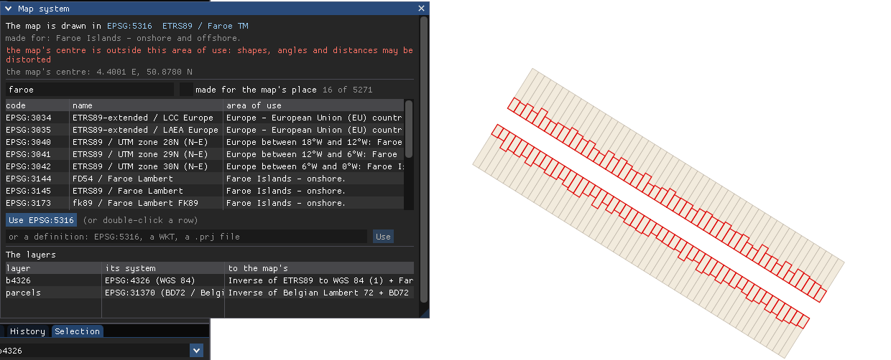

carto2D (named editor2d until 0.6, decision 63): a desktop program to see, query, measure and print maps, that links render2d's libraries directly. The notes keep the name editor2d where they tell what was done under it. This document comes before the code; when in doubt, it is authoritative.
render2d does one thing: an extent + a size → an image. viewer2d uses it from afar: it launches render2d.exe for every view, reads the PNG written to disk and lays it in Leaflet. editor2d does the same work up close: the libraries are in the executable, the layers stay open, and the image never goes through a file.
viewer2d editor2d (this document)
──────── ────────────────────────
browser ─HTTP─► FastAPI ─process─► ImGui (mouse, panels)
render2d.exe │ a View (extent + size)
opens the layers ▼
reads the styles r2d_map: layers OPEN, styles READ ONCE
draws (Cairo) │ draws into a Cairo image in memory
writes view.png ──┐ ▼
Leaflet ◄─HTTP─ reads view.png ◄──┘ ARGB32 pixels ─► OpenGL texture ─► ImGui::Image
What we gain: no more opening files or reading styles at every view, no more PNG compression, no more process launching. What we must learn: getting an image from Cairo to OpenGL without mixing up colours or directions, and staying fluid while the map is being drawn.
editor3d contains two kinds of code: the shell (a window, events, ImGui, the build) and the domain (scene, camera, meshes, gizmos, undo). editor2d takes the shell and leaves the domain.
| editor3d | In editor2d | Why |
|---|---|---|
app/Window (GLFW, OpenGL 4.5 context, consumeMouse, wheel and clicks by events) | taken, almost as is | Navigation needs exactly that: position, buttons, wheel, and quick clicks that fit between two frames. |
ui/ImGuiLayer (docking, wantsMouse) | taken, plus 150 % scaling (§7) | Knowing whether the mouse is over a panel or over the map: the same question as in 3D. |
The Application::run loop | taken in spirit | pollEvents → beginFrame → update → draw → endFrame → swap. |
third_party/glad, FetchContent GLFW 3.4 and ImGui (docking branch) | taken | Same OpenGL loader, same versions. |
Makefile around CMake, .vscode/ | taken | make, make run, make test, make release: the same gestures. |
Texture | adapted (§5) | Same idea (an image on the GPU), but without sRGB, without mipmaps, and updated with every new image. |
Framebuffer, Renderer, Shader, Mesh | left out | In 3D, the GPU draws the scene. In 2D, Cairo draws, on the processor; the GPU only displays a ready-made image. |
| Scene, orbit camera, picking, gizmos, history, nlohmann/json, stb_image | left out | The 3D domain. Undo may come back with editing, later. |
We copy Window and ImGuiLayer instead of sharing them between the two projects. Two 150-line files are not worth a shared library; besides, they diverge a little (the scale factor, the wheel with its position). Each adaptation is noted in a DIVERGENCES.md, so that it can be carried back to editor3d, or so that we know why we deviated.
A consequence: in editor3d, the folder is called app/ and the namespace app. render2d also has a src/app/ folder (with version.hpp), and its headers are included as "app/…". So that no #include can ever land in the wrong project, editor2d uses folder names render2d does not have (§74), and the namespace e2d.
The two projects sit side by side:
projet_renderer/
render2d/
render2d/ ← the C++ project (CMakeLists.txt, src/, tests/, styles/)
viewer2d/ ← Python
tiles2d/ ← Python
editor2d/ ← this project
Seen from editor2d, render2d's C++ project is therefore at ../render2d/render2d (the folder is doubled: the first render2d is the family, the second the C++ project).
A. add_subdirectory | B. render2d installed, find_package | |
|---|---|---|
| Principle | editor2d includes render2d's CMakeLists in its own build. The r2d_core, r2d_cairo… targets then exist in editor2d as if they had been written there. | render2d is built and "installed" (libraries + headers + a render2dConfig.cmake file) into a folder; editor2d finds it there. |
| Changing render2d | Change a render2d file, make in editor2d rebuilds it. Nothing else to do. | render2d must be reinstalled after every change, otherwise editor2d uses the old version. |
| Work to do | One line in editor2d, and a small precaution in render2d (below). | Writing render2d's install and export rules: about fifty lines of unexpressive CMake. |
| When it is the right choice | The two projects evolve together, by the same author. Our case. | render2d is frozen, distributed, used by people who do not build it. |
We take A. On editor2d's side, it fits in three lines:
# Where render2d's C++ project lives. Can be overridden:
# make CMAKE_ARGS=-DR2D_DIR=C:/elsewhere/render2d
set(R2D_DIR "${CMAKE_CURRENT_SOURCE_DIR}/../render2d/render2d" CACHE PATH "render2d C++ project")
# Second argument: where its build files go, inside OUR build folder
# (mandatory when the source folder is not below ours).
add_subdirectory(${R2D_DIR} ${CMAKE_BINARY_DIR}/render2d)
target_link_libraries(editor2d PRIVATE r2d_map r2d_cairo glad glfw imgui)
And that is all for the headers: r2d_core declares target_include_directories(r2d_core PUBLIC src). "PUBLIC" means: whoever links to me also gets this path. editor2d therefore writes #include "core/view.hpp" without configuring anything, and GDAL, Cairo, yaml-cpp follow the same way (Cairo is PUBLIC in r2d_cairo; GDAL and yaml-cpp are PRIVATE, they are linked but their headers do not leak into editor2d — exactly what render2d's §17 wanted).
render2d's CMakeLists does not contain only libraries: it also builds render2d.exe, render2d_demo and six test programs, and registers them with CTest. Included as is, it would have all that compiled at every editor2d make, and editor2d's make test would run render2d's tests.
CMake knows the question "am I the main project, or am I included by another?": the PROJECT_IS_TOP_LEVEL variable (CMake 3.21). render2d wraps its programs and tests in an if(PROJECT_IS_TOP_LEVEL). Built on its own, it does not change; included by editor2d, it delivers only its libraries.
Rereading render2d with editor2d's eyes, two things are missing.
main()The six libraries can read a layer, read a style, draw a layer. But what makes them a map is written in app/render2d.cpp, directly in main():
SOURCE::layer syntax;scaledStyle (the pixel ratio), fall back on the default style in case of error;editor2d needs all of that, except writing the file. Copying it would mean two versions of the same logic diverging at the first step. So we extract these steps into a seventh library, r2d_map:
// src/map/map.hpp (render2d) — a sketch, to be refined with the code.
struct LayerSpec { std::string source; std::optional<std::string> style; };
class Map {
public:
// Opens the layers and reads the styles. Problems become warnings.
static Map open(const std::vector<LayerSpec>& specs);
void setPixelRatio(double r); // re-scales the styles (§7)
void setVisible(int layer, bool on);
std::optional<Envelope> extent() const;
// Steps 5 and 6: every visible layer, then the labels, on any Canvas.
MapReport render(Canvas& cv, const View& view);
};
// The lines render2d prints today, so that both programs say the same thing.
std::vector<std::string> reportLines(const MapReport& r);
render2d.exe then becomes a small program: read the options, Map::open, create the target, render, write, print reportLines. The regression test is simple: same command, same PNG, same report before and after.
Note: r2d_map does not know Cairo. It draws on a Canvas, the abstract interface of render2d's §10. editor2d (or render2d.exe) chooses the surface.
CairoTarget::create(path, size) chooses PNG, SVG or PDF from the extension, and finish() writes the file. There is no "image in memory" target whose pixels can be read. One is needed, a very small one:
class CairoImage { // backend/cairo (render2d)
public:
static std::unique_ptr<CairoImage> create(ImageSize size, std::string& error);
Canvas& canvas();
const unsigned char* pixels(); // flushes Cairo, then the first byte of row 0
int stride() const; // bytes from one row to the next (§4)
ImageSize size() const;
};
These two additions make a small render2d step (0.3.5, "the map as a library"), done before the first line of editor2d. They serve later too: tiles2d could one day link r2d_map instead of launching one process per metatile.
render2d creates its PNGs with cairo_image_surface_create(CAIRO_FORMAT_ARGB32, w, h). The name says almost everything: each pixel is a 32-bit integer, cut into four bytes A, R, G, B (alpha, red, green, blue), from most to least significant.
Take a half-transparent orange pixel: red 255, green 128, blue 0, alpha 50 %.
0x80 80 40 00, i.e. 0x80804000.00 40 80 80 → B, G, R, A.The one thing to remember: Cairo's ARGB32 = bytes B, G, R, A in memory on a PC. That is why OpenGL is told GL_BGRA and not GL_RGBA (§5). With GL_RGBA, red and blue would be swapped: red roofs would turn blue, water would turn brown. If one day the map comes out "in negative colours", that is where to look.
Rows are laid one after the other, row 0 being at the top of the image. The number of bytes between the start of one row and the start of the next is called the stride. Cairo may round it up to align the rows; so always ask for it (cairo_image_surface_get_stride), never assume it.
ImGui does not display bytes in memory: it displays OpenGL textures, like the 3D editor's views. So the Cairo image must be sent to the GPU. Three OpenGL calls, in the same "DSA" style as editor3d (glTexture… on the identifier, without glBindTexture):
// Once, when the map panel gets a new size:
glCreateTextures(GL_TEXTURE_2D, 1, &id);
glTextureStorage2D(id, 1, GL_RGBA8, width, height); // 1 level: no mipmaps
// For each new Cairo image (same size):
glPixelStorei(GL_UNPACK_ROW_LENGTH, stride / 4); // pixels per row in memory
glTextureSubImage2D(id, 0, 0, 0, width, height,
GL_BGRA, GL_UNSIGNED_BYTE, pixels); // §4: B, G, R, A
glPixelStorei(GL_UNPACK_ROW_LENGTH, 0); // back to the default
GL_RGBA8: how the GPU stores the image (four 8-bit channels). GL_BGRA, GL_UNSIGNED_BYTE: how it is stored on our side. The driver converts during the transfer.GL_UNPACK_ROW_LENGTH: the stride of §4, but expressed in pixels (4,800 / 4 = 1,200). Useless as long as stride = width × 4; set anyway, it is free and guards against a surprise.glTextureSubImage2D replaces the content without recreating the texture: it is recreated only if the panel's size changes. The same rule as Framebuffer::resize in editor3d.In editor3d, drawViewImages passes the coordinates uv (0, 1) → (1, 0) to ImGui, with this comment: "an OpenGL texture keeps its first row at the bottom, ImGui draws from the top". That was true because the image had been drawn by OpenGL, which puts y = 0 at the bottom.
Here, the image was drawn by Cairo, row 0 at the top. glTextureSubImage2D stores the first row received at v = 0. ImGui displays v = 0 at the top of the rectangle. Result: Cairo's top row arrives at the top of the screen. So we keep the default coordinates, uv (0, 0) → (1, 1). Two direction errors that cancelled out in 3D, none here.
editor3d's textures are GL_SRGB8_ALPHA8: the GPU "decompresses" the colours into linear light, so that lighting adds them correctly. Here there is no lighting computation: we want Cairo's bytes to reach the screen intact, so that editor2d's map has exactly the colours of render2d's PNG. Hence plain GL_RGBA8.
The filter is set to GL_LINEAR: during a zoom (§9), the image is stretched, and linear interpolation is less ugly than big squares. But at rest, the texture must fall exactly on the screen's pixels. render2d's §9 already has the answer: if the image is placed at x = 100.5 instead of x = 100, every screen pixel straddles two image pixels and takes 50 % of each. A 1-pixel black line becomes two grey columns. So the image's position is rounded to an integer.
In §4, Cairo stored the 50 % orange as (128, 64, 0) and not (255, 128, 0). That is premultiplied alpha: the colour is already multiplied by its opacity. Porter and Duff (1984) introduced it because all compositing formulas become simpler and more correct that way; Cairo, Skia, AGG and most engines work like this.
The rule "lay a colour over a background" (over) is written, for each channel:
straight (non-premultiplied) colour c, alpha a: result = c × a + background × (1 − a)
premultiplied colour p = c × a: result = p + background × (1 − a)
The trap: by default, ImGui composites with the first formula (glBlendFunc(GL_SRC_ALPHA, GL_ONE_MINUS_SRC_ALPHA)). Given colours that are already premultiplied, it multiplies by alpha a second time.
A 50 % red pixel (the anti-aliased edge of a red line), on a white background. Working in 0…255, alpha = 0.5.
On an opaque pixel (alpha = 1), both formulas give the same thing: p = c, and 1 − a = 0. The problem therefore affects only the image's partly transparent pixels.
| Remedy | How | For editor2d v1 |
|---|---|---|
| 1. An opaque map | Cairo starts with clear(background) with a solid background (render2d's default --background FFFFFF). All final pixels then have alpha = 1: there is nothing left to composite. | chosen: a map has a background. It is already render2d's default behaviour. |
| 2. Un-premultiply | Before sending, divide each colour by alpha (128 → 255…). A loop over 5 million pixels, and a loss of precision on very transparent pixels. | no |
| 3. Change the formula | An ImGui callback that sets glBlendFunc(GL_ONE, GL_ONE_MINUS_SRC_ALPHA) while the image is drawn. | later, if layers are wanted in separate textures, laid one over another |
render2d's §39 set out the two units: the screen dot (the real little lit square, 3,840 across) and the logical pixel (Windows' and the browser's, 1.5 times larger at 150 %). In the browser, viewer2d reads devicePixelRatio. In editor2d, GLFW answers, with three functions:
| GLFW | Answer on a 4K screen at 150 % (full-screen window) |
|---|---|
glfwGetWindowSize — size in "screen coordinates", the mouse's units | 3,840 × 2,160 (roughly, minus the taskbar) |
glfwGetFramebufferSize — size in drawable dots | 3,840 × 2,160 |
glfwGetWindowContentScale — the enlargement factor Windows wants | 1.5 × 1.5 |
The subtlety: on Windows, GLFW counts the window and the mouse in real dots. The first two lines therefore give the same numbers. (On macOS or Wayland, the first line would be 2,560 × 1,440, and it would be the one in logical units. The comment of editor3d's Window::framebufferSize, "differs from window size on HiDPI", targets those systems.) On Windows, the 150 % shows only in the content scale.
Since a test is worth more than documentation, the first program displays the three answers in a corner of the panel: check on the actual screen before building on it.
r2d_map is the content scale: 1.5. A font-size: 9 number is drawn over 9 × 1.5 = 13.5 image pixels, hence 13.5 screen dots: the same size as a 9-logical-pixel text in software that respects the 150 % setting.scale: [min, max] rules, as in viewer2d.Compared with viewer2d, for the same map: there, the browser gives 800 × 600 logical pixels, viewer2d multiplies by devicePixelRatio = 1.5 and asks for 1,200 × 900. Same image, same ratio, same scale. Both viewers show exactly the same map: that is the goal.
The same factor serves ImGui: without it, the panels are drawn "at 100 %" on a 4K screen, with 13-dot text, readable only up close. The font size and margins are multiplied by 1.5 (style.ScaleAllSizes(1.5f), and style.FontScaleDpi = 1.5f in the ImGui 1.92+ that editor3d uses). This is also why editor3d's panels can look small; the fix can be carried back there (DIVERGENCES.md).
If the window moves to a screen set to 100 %, the content scale becomes 1. GLFW notifies through a callback; then Map::setPixelRatio(1.0) is called, which recomputes the scaled styles from the original styles (scaledStyle applies to a copy, the original is kept). One of the reasons to keep both in r2d_map.
The window redraws in sync with the screen (glfwSwapInterval(1), as in editor3d). At 60 Hz:
What does a map cost? render2d's report says it, layer by layer (read … ms, draw … ms). Measured with editor2d 0.1.1, for the start view of viewer.yaml, the whole Region at 1:27,778, 2,400 × 1,350 pixels: 1,354 ms.
| Layer | Features | Reading | Drawing | Total |
|---|---|---|---|---|
| Parcels | 124,589 | 374 ms | 253 ms | 627 ms |
| Buildings | 143,729 | 421 ms (+ 43 ms of filters) | 262 ms | 726 ms |
| Addresses, topo points | 0 (no rule at this scale) | — | 0 ms | |
(A first version of this chapter assumed 180 ms "as an example": reality is 7.5 times slower.)
And the same map zoomed in, measured with editor2d 0.1.2, at 1:977:
| Overall view, 1:27,778 | Street, 1:977 | |
|---|---|---|
| Parcels read | 124,589 in 374 ms | 299 in 1.0 ms |
| Buildings read | 143,729 in 421 ms | 318 in 1.0 ms |
| Addresses, trees | no rule at this scale | 1,223 + 115 read, 349 numbers |
| Total render | 1,354 ms (81 frames) | 84.5 ms (5 frames) |
The spatial filter (render2d's §18) does most of the work: 400 times fewer features read, a render 16 times faster. A render's time therefore depends mostly on the scale, and it is the overall view, the slowest, that justifies the render thread of §11.
| A. Redraw everything at every move | B. Stretch, then redraw | C. Tiles in memory | |
|---|---|---|---|
| During the gesture | A full render at every mouse move. | Move and enlarge the image we already have, which costs the GPU nothing. Uncovered edges stay empty, the zoom is a little blurry. | Lay the already computed tiles; missing ones are computed and arrive one by one. |
| After the gesture | — | A single render, of the final view, which replaces the stretched image. | The final view's tiles. |
| Fluidity | Good only if the render fits in 16 ms. | Always 60 frames/s during the gesture. | Always 60 frames/s, and going back is instant. |
| Complexity | Minimal. | Low: one computed destination rectangle (§10). | High: grid, levels, cache, eviction, labels cut at tile edges. |
| Seen before | viewer2d before image swapping. | viewer2d's View mode: Leaflet stretches the old image during the zoom. | viewer2d's Tiles mode, tiles2d. |
We take B for version 1: it is the behaviour of viewer2d's View mode, it is simple, and it gives 60 frames/s whatever the render time. C remains possible later, and B is not wasted: even with tiles, one must know how to display an image computed for a view other than the one being looked at. That is the subject of the next chapter.
When to trigger the render? At the end of the gesture: when the button is released after a drag, and for the wheel, when it has been quiet for 200 ms (one rarely turns the wheel by a single notch). One gesture = one render, not fifty.
The "map" is made up (blocks of buildings in a fictitious Lambert); the render cost is simulated. In mode A, the whole page freezes during each render, exactly as the ImGui window would. Numbers appear only at large scales, like a scale rule: in mode B, they grow during the zoom, then get their size back at the next render.
Strategy B rests on an idea that must be named clearly: at every moment, there are two Views.
At rest, they are identical. During a gesture, they diverge, and the screen must show the image where it would fall in the wanted view. It is enough to follow the path: image pixel → ground (imageToWorld of the image's view) → screen pixel (worldToImage of the wanted view). Neither transformation has rotation or shear: their composition is a simple enlargement + offset. For ImGui, it is a destination rectangle.
With res in m/pixel, xmin and ymax the top-left corner of each view:
enlargement k = resimage ÷ reswanted
image corner on screen x0 = (xminimage − xminwanted) ÷ reswanted y0 = (ymaxwanted − ymaximage) ÷ reswanted
image size on screen width × k, height × k
(y is inverted, as everywhere since render2d's §3: on screen, y goes down; on the ground, it goes up.)
The image was drawn for: xmin = 149,000, ymax = 171,000, res = 0.5 m/pixel, 1,200 × 900 pixels. The mouse is dragged 120 pixels to the right and 40 down.
Same image. The mouse is on pixel (300, 200) and we zoom by a factor of 2. We want the ground point under the mouse to stay under the mouse (that is what Leaflet does, and what gives the impression of diving towards a precise spot).
These formulas do not know where the image comes from nor what happened since: they work after a drag, a zoom, three zooms and a drag, and even when the arriving image was requested for an intermediate view (§11). That is what makes strategy B so simple.
To read the corresponding code, line by line: §55.
Strategy B settles fluidity during the gesture. The final render remains: up to 1,354 ms. Done in the loop, it freezes the window for 81 frames in a row, at every end of gesture. With the wheel, it is felt at every notch. So it is handed to a second thread, and the window continues at 60 frames/s with the stretched image until the new one arrives.
The golden rule of threads: each object has a single owner, and only copies are passed around. Here, the split is dictated by the libraries themselves:
| Main thread (the window) | Render thread |
|---|---|
| GLFW, ImGui, OpenGL: must stay in the thread that created the window and the context. | The GdalLayers: a GDAL layer must be read by only one thread at a time. It never leaves the render thread. |
| The wanted view, the layers' "visible" boxes. | The styles (read once, scaled). |
| The texture and the view of the displayed image. | The Cairo surface in memory. |
main thread render thread
─────────── ─────────────
end of gesture ──► Request #7 ─┐
├──► [ box: a single slot ]──► takes #7, draws…
new gesture ─────► Request #8 ─┘ (#8 overwrites #7 if it was
not taken yet)
…
every frame: done: Result #8
has a Result arrived? ◄──── [ result: one slot ] ◄── (pixels + View + report)
→ glTextureSubImage2D
→ image's view = Result.view
View, the pixel ratio, the visible boxes.View for which they were drawn, and the report.renderLayer; kept for later.)In C++, it is a std::thread, a std::mutex protecting the two boxes, and a std::condition_variable so that the render thread sleeps when it has nothing to do (instead of spinning and heating a processor core).
One could start without a thread (strategy B, render in the loop at the end of the gesture, with a hitch of over a second in the overall view) and add it later. But the shape of the code changes: with the thread, the layers live in the other thread, and the whole interface talks through requests and results. It is simpler to lay down that shape right away, in a program that is still small, than to graft it later onto a program used to touching the layers directly. Hence: B + thread from the first version, in two sub-steps (first the fixed image, then navigation and the thread).
The first screen: the map fills the whole window (like editor3d's perspective view), with three ImGui elements laid over it.
┌─ File View ────────────────────────────────────────────────────────────┐ │ ┌ Layers ───────────────┐ │ │ │ ☑ parcelles poly │ │ │ │ ☑ batiments poly │ the map │ │ │ ☐ adresses point │ │ │ │ ☑ arbres point │ │ │ ├ Report ───────────────┤ │ │ │ map: EPSG:31370, 1200x│ │ │ │ parcelles 4 210 read│ │ │ │ … │ │ │ │ warning: … │ │ │ └───────────────────────┘ │ ├─────────────────────────────────────────────────────────────────────────┤ │ X 149,320.25 Y 170,813.75 m 1:2,679 render #8 in 182 ms │ └─────────────────────────────────────────────────────────────────────────┘
One checkbox per layer, in drawing order (the first is underneath, as in render2d), with its name and its geometry type (GdalLayer's LayerInfo). Ticking or unticking sends a new request (§11): the box is copied into the Request, never read directly by the render thread. The list of layers comes from a small configuration file at startup, viewer2d's own viewer.yaml (§13), read with yaml-cpp, which render2d already uses.
Exactly render2d.exe's lines, produced by the same reportLines function (§3), with the warnings in yellow. They arrive with each Result: the displayed report always matches the displayed image. It is viewer2d's test bench, without the detour through the HTTP header.
They are computed with the wanted view (§10), never with the image's view: during a drag, the mouse points at a point of the wanted view, even if the image underneath lags behind.
View::imageToWorld applied to (640.5, 372.5): the inverse matrix of render2d's §6, which we do not have to rewrite.Next to it: the wanted view's scale (scaleDenominator(), pixel ratio included, §7), and the number and duration of the last render. As in viewer2d, handy to note an extent and pass it to --bbox.
viewer2d already reads a file that says everything a map needs: the layers, their styles, the start view. editor2d reads the same file, viewer.yaml, instead of having one of its own.
render2d: .../render2d.exe ← for viewer2d only: ignored
layers: ← read by both
- source: C:/data/shp/UrbISBuildings_04000_CadastralParcels.fgb
style: ../render2d/styles/parcelles.yaml
- ...
start:
bbox: [148000, 168000, 156000, 175000] ← read by both
max_parallel: 2 ← for viewer2d only: ignored
tiles: C:/data/cache ← for viewer2d only: ignored
The reason is that of roadmaps that age badly: two files saying the same thing always end up contradicting each other. With only one, a layer added appears in both viewers, and so does a corrected style.
editor2d path/to/viewer.yaml. Without a .yaml, editor2d starts on an empty map (since 0.5.4; before, it opened viewer2d's viewer.yaml by default). make run CONFIG=path/to/viewer.yaml opens a file.styles/a.yaml in …/viewer2d/viewer.yaml means …/viewer2d/styles/a.yaml, wherever the program is launched from. Absolute paths (C:/…), file::layer and PG:… stay as they are.start: bbox is an error, shown in red in the window, which opens anyway. A layer not found is only a warning from Map::open: the others are drawn.Since 0.2.3, this reader lives in render2d (r2d::loadConfig, §57 of its notes), shared with render2d --config. start: bbox becomes optional there (otherwise, all layers), and visible: false hides a layer at startup.
At step 1a, the map does not move: it is the start view, at the window's size. There are therefore only two reasons to redraw it.
Until step 1b, rendering happens in the main loop: while it lasts, the window is frozen (§8). Yet when the window's edge is dragged, its size changes at every frame.
During the gesture, the old image stays displayed at its size, stuck to the top-left corner: neither stretched nor blurred. If the window grows, the uncovered band is white, the map's background colour. Step 1b does better (§10), but it is already clean.
viewer.yaml's start: bbox almost never has the window's shape. makeView does what it has done since render2d's §4: it keeps square pixels and shows the whole requested extent, widening it in one direction if needed.
This step exists mostly to check on screen what chapters 4 to 7 announce: right colours (red and blue not swapped), sharp image (no half pixel), strokes and numbers at the right size at 150 %. The strictest test: run render2d on the same extent and size (--size 2400x1350 --pixel-ratio 1.5), and compare. Outside the panels, the two images must be identical to the pixel. They are, on the test machine.
So far, editor2d changed nothing: it looked. At 1c, layers can be ticked and unticked; at step 2, selected; later, edited. Before the first change, a rule is set: nothing changes the state except through a command.
It is editor3d's pattern (scene/History, the "Undo and redo" chapter of its notes), taken as is. A command is a small object that knows how to:
apply: make the change (and redo it);revert: restore exactly the previous state, which it noted before acting;label: introduce itself in the History panel ("Hide Parcels").The history keeps two stacks: the past (what has been done) and the future (what has been undone and can be redone).
Four layers, all visible at the start.
| Gesture | Effect | Past (the last on the right) | Future |
|---|---|---|---|
| untick Parcels | Parcels hidden | [Hide Parcels] | [ ] |
| untick Trees | Trees hidden | [Hide Parcels, Hide Trees] | [ ] |
| Ctrl+Z | Trees shown again | [Hide Parcels] | [Hide Trees] |
| Ctrl+Z | Parcels shown again | [ ] | [Hide Trees, Hide Parcels] |
| Ctrl+Y | Parcels hidden | [Hide Parcels] | [Hide Trees] |
| untick Addresses | Addresses hidden | [Hide Parcels, Hide Addresses] | [ ]: the future is erased |
The last row is editor3d's rule: a new action erases the future. "Hide Trees" had been undone in a world where addresses were visible; that world no longer exists.
Dragging and zooming change the view, not the data. If every wheel notch were a command, twenty Ctrl+Z would be needed to undo a single unticked box. As in most GIS, the view stays out of undo; a history of views (previous, next) may come separately.
In editor3d, a command exists only in C++: the interface builds it, with pointers and indices. editor2d will soon have a second entrance, an API (a small local web server): a script must be able to ask for exactly what a click does. So from now on, every command can be written in JSON:
{"name": "layer.setVisible", "layer": "UrbISBuildings_04000_CadastralParcels", "visible": false}
layer.setVisible) to the C++ class's factory. It can also describe each command (its parameters, their types): that is what the server will return for GET /commands.By its name, not by its position. Positions change when a layer is added to viewer.yaml or the list is reordered: a script saying "layer 2" would one day target the wrong one. The name is the one GDAL gives (the report's). If two layers have the same name, the second becomes name#2, the third name#3.
Since each command is written as one line of JSON, the sequence of executed commands is a replayable script:
{"name": "layer.setVisible", "layer": "UrbISBuildings_04000_CadastralParcels", "visible": false}
{"name": "layer.setVisible", "layer": "Topo_points", "visible": false}
{"name": "history.undo"}
It is the "replayable command line" of the GDAL tools, editor version. A later step writes it to a file; recording a macro will mean keeping this log.
A command changes the state; then everyone depending on it must learn about it: the History panel must update, the map must be redrawn, tomorrow a subscribed script must be told. Rather than the command calling them all one by one (and having to know them), it publishes an event, and each has subscribed to those it cares about.
command executed ──► event {"event": "layer.visibility", "layer": "...", "visible": false}
│
├──► Application: requests a new render
├──► History panel: refreshes (via "history.changed")
└──► (later) server: sends it to subscribed scripts
| Event | When | Content |
|---|---|---|
layer.visibility | after layer.setVisible, its undo or its redo | the layer, visible or not |
history.changed | after any command, undo or redo | the labels of the past and the future |
view.changed | at the end of a gesture, not at every frame | the extent, the scale |
render.done | when an image arrives from the render thread | the number, the duration |
view.changed only at the end of the gesturerender.done on receiving it.┌ Layers ────────────────────────────────────────────────┐ │ ☑ Topo_points point out of scale │ │ ☑ UrbISBuildings_04000_Addresses point │ │ ☑ UrbISBuildings_04000_Buildings polygon │ │ ☐ UrbISBuildings_04000_CadastralParcels polygon │ └────────────────────────────────────────────────────────┘
viewer.yaml's and the drawing order (the first is drawn underneath): row i of the panel shows layer n − 1 − i. With 4 layers, row 0 shows layer 3 (Topo_points), row 3 layer 0 (Parcels).layer.setVisible (§15, §16). The layer.visibility event (§17) triggers the render request, which takes the boxes in its copy (§11).LayerInfo, read once on opening.passes == 0 in the report). It is the yellow warning, brought to where one looks for it: one understands why a ticked layer does not appear.Before this step, the map filled the whole window, and the panels floated over it. ImGui's docking was enabled, but nothing was set up to anchor panels to the edges. A dockspace is added over the whole window: panels can be docked left, right, at the bottom, in tabs. What remains in the middle, the central area, becomes the map's place.
At every frame, the central area's rectangle (its corner and size) is read. It, and no longer the window, gives the size of the image requested from the render thread and the size of the Navigator. Nothing is drawn under the panels any more.
§12 had foreseen it with a corner at (0, 38): the mouse's position in the map is its position in the window minus the central area's corner.
Navigator for a zoom, and its centre (640.5, 410.5) gives the displayed coordinates.Moving a panel or widening the area is a resize like any other: same 0.2 s rule (§14), same Navigator::resize (the corner and the scale stay).
imgui.ini yet), editor2d builds a layout: Layers on the left, History and Build in tabs below, Report and Events in tabs at the bottom. After that, the user's own layout is kept in imgui.ini. To get the default back: close editor2d and delete imgui.ini.view.changed at startup).A thin band at the bottom of the window, always visible: coordinates under the mouse, scale, render state ("drawing view no. 15…" or "view no. 15: 84 ms"). The Report panel gets its role back: render2d's detailed report, opened when needed.
The left button already moves the map. It will also select. The difference is read on release: if the mouse has barely moved since the press, it is a click; otherwise, a drag. The threshold is editor3d's (kClickTolerance): 4 pixels.
During those first 4 pixels, the map does not move yet: otherwise a click would shift the view by 3 pixels. Beyond, it catches up at once with the distance travelled, then follows the hand as before (§10).
| Gesture | Effect |
|---|---|
| click on a feature | it becomes the selection (the old one is replaced) |
| click on nothing | the selection is cleared |
| Shift + click | the feature is added to the selection |
| Ctrl + click | the feature is added if not there, removed if it is |
| Esc | the selection is cleared |
Later: a rectangle (with a key, since dragging moves the map), selection by expression (render2d's CQL filters), and a repeated click at the same place to go to the feature underneath.
To read the corresponding code: §55.
The question "what is under this point?" is asked of Map::queryAt (§53 of render2d's notes). It is quick: a few features, a few milliseconds. But the Map belongs to the render thread (§11), which may be busy drawing the Region: 1.5 s. A click waiting for the render to end would be unbearable.
So questions get their own thread, with their own Map: the same sources opened a second time, the same styles read a second time. GDAL accepts two connections to the same file in two threads without difficulty. The cost: a few megabytes of styles and GDAL buffers more, nothing next to the 13 MB of a single map image.
main thread render thread (Map no. 1) question thread (Map no. 2)
─────────── ────────────────────────── ────────────────────────────
end of gesture ── Request ──► draws 1.5 s
click ──────────────────────────────────────── Query ────────────► queryAt: 3 ms
◄──────────────────────────────────────────── Answer ──── hits: layer, FID, geometry, attributes
command selection.set
◄── Result (image) ──
The selection is part of the Document (§15): a set of (layer, FID). It is the equivalent of a "selected" flag in a database, kept next to the data rather than inside: the sources stay read-only.
selection = { "UrbISBuildings_04000_Buildings": {1823, 1907, 2210},
"UrbISBuildings_04000_Addresses": {45012} }
The click, once the answer has arrived, builds a command, like the layers' checkbox:
{"name": "selection.set", "mode": "replace",
"items": [{"layer": "UrbISBuildings_04000_Buildings", "fid": 1823}]}
mode: replace (click), add (Shift), toggle (Ctrl), clear (click on nothing, Esc).{"event": "selection.changed", "count": 1, "items": [...]}. The Selection panel, the selection drawing and, later, scripts subscribe to it.A script can therefore send exactly the same command: "select buildings 1823 and 1907". It does not need to click.
We draw twice. First the map, the image we have, moved and stretched during gestures (§10); then the selection on top.
The answer to the question brings the geometry of the touched features. editor2d keeps it (one copy per selected feature) and draws it itself, with ImGui's draw list, as a thick and conspicuous outline. Its vertices are converted from ground to screen at every frame, with the wanted view:
It is §12's path in reverse. Since it is redone at every frame, the selection follows the drag and the wheel without waiting for the render, and stays sharp while the map underneath is stretched.
┌ Selection ───────────────────────────────────────┐ │ 3 features [Clear] │ │ ▾ UrbISBuildings_04000_Buildings (2) │ │ 1823 │ │ 1907 │ │ ▾ UrbISBuildings_04000_Addresses (1) │ │ 45012 │ │ ─ fid 1823 ────────────────────────────────────── │ │ AREA 412.6 │ │ ... │ └───────────────────────────────────────────────────┘
selection.set command in clear mode, undoable like the others.A screenshot of the release build at 1:860 shows in the status bar: render 27.1 ms, upload 34.4 ms. Sending the image to the GPU takes longer than drawing it. §5 predicted "a few milliseconds". Let us redo the calculation with the real numbers:
It is not the recreation of the texture: MapTexture recreates it only if the size changes, and otherwise fills it with glTextureSubImage2D (§5). The 33 ms come from elsewhere: from a wait.
When the loop calls an OpenGL function, nothing is drawn right away. The driver notes the order in a queue, and the GPU executes it later, at its own pace. The loop does not wait; it is already preparing the next frame. The driver lets it get ahead, but not too far: usually two or three frames ("frames in flight"). Beyond that, glfwSwapBuffers blocks until the screen has displayed one.
Each queued frame contains the order "draw the map with this texture". If, at that moment, we ask to replace the texture's content, the driver has two choices: write at once (and the queued frames would display the new map, or a mix of both) or wait for the queue to empty. It waits. And meanwhile, the main thread is blocked in glTextureSubImage2D.
The match is good, but it is still only a hypothesis: the proof will be the measurement after the change below. If the upload does not drop to 1 or 2 ms, the explanation is wrong and we look elsewhere.
Measured with 0.2.2: still upload 34.5 ms. The two textures changed nothing: the queue hypothesis was wrong. They are kept (they cost nothing and do avoid that particular wait), and 0.2.3 measures separately the sending of the bytes and the wait for the graphics card, instead of guessing a second time.
Measured with 0.3.0: upload 35.1 + finish 5.7 ms. The call itself is what takes the time: the graphics card has finished in 5.7 ms.
0.3.1 therefore offers four ways to deliver, chosen at launch by the E2D_UPLOAD environment variable (the status bar shows upload[n]):
| n | How | What it hopes to avoid |
|---|---|---|
| 0 | GL_BGRA, GL_UNSIGNED_BYTE, GL_UNPACK_ROW_LENGTH always set (up to 0.3.0) | nothing: the reference |
| 1 | the same, ROW_LENGTH only if the rows are not contiguous | a driver leaving its fast path as soon as ROW_LENGTH is not zero |
| 2 | GL_BGRA, GL_UNSIGNED_INT_8_8_8_8_REV: the same bytes under their "native" name | byte-by-byte conversion |
| 3 | GL_RGBA as is, and the card swaps red and blue when reading (swizzle) | any conversion |
All four give exactly the same pixels (checked). All four are measured on the actual graphics card, the fastest is kept, and the numbers are noted here.
Measured (overall view, 1,870 × 954, release): method 0: 40.0 ms; 1: 35.4 ms; 2: 35.4 ms; 3: 35.0 ms. All four are alike: even without any conversion, 35 ms. So it is not the byte order. Second hypothesis refuted.
Third lead: the test machine is a laptop with a discrete GPU. Such laptops almost always have a second graphics chip, built into the processor, which often drives the screen; Windows launches programs it does not know on that small chip, to save battery. 0.3.2 therefore displays the card's vendor and name in the Build panel, and asks the drivers for the big card, as games do (NvOptimusEnablement, AmdPowerXpressRequestHighPerformance). It can also be forced in Windows: Settings > System > Display > Graphics > editor2d.exe > "High performance".
Checked: the Build panel says "4.5.0 NVIDIA": the discrete card is indeed doing the work. Third lead refuted. One remains: the NVIDIA driver executes our orders in its own thread ("threaded optimization") and, faced with 7 MB taken from the program's ordinary memory, perhaps waits to have caught up before copying (hence a fixed time, and an almost zero finish). The remedy would be to copy through a driver memory area (a PBO). Set aside: 35 ms is 3 % of a Region render; we will come back to it if it gets in the way. Method 1 remains the default.
MapTexture keeps two textures, A and B, and the number of the one being displayed. A new image goes into the other, then we switch:
image #10 arrives: displayed = A → copy into B, then displayed = B image #11 arrives: displayed = B → copy into A, then displayed = A
When copying into B, the queued frames use only A: the driver has nothing to wait for. It is exactly what the window itself already does: it draws into a hidden buffer and glfwSwapBuffers swaps it with the screen's ("double buffering").
Are two enough? B would have to still be in the queue when the next image arrives, that is, two new images less than 33 ms apart. Yet each image requires a render (27 ms at the fastest, at 1:860) and is requested only at the end of a gesture (§14). In the worst case, we fall back on a wait, rarely and without breaking anything.
INSPIRE_ID and BLOCK_ID were cut off: they are URLs of 50 to 60 characters (https://databrussels.be/id/building/…). Widening the panel would not always be enough. Two gestures:
ImGui::SetItemTooltip) shows the full value, with the field's name.ImGui::SetClipboardText), ready to paste into a browser or an SQL query. The status bar confirms it for a moment: copied INSPIRE_ID.Copying does not change the document: it does not go through a command and does not enter the history (§15), like navigation.
The layers table (§18) has three columns, all "fit to content": the checkbox with the name, the type, and "out of scale". With a long name like UrbISBuildings_04000_CadastralParcels, the first column takes the whole width of the panel, and the other two are clipped at the edge (poi, pol). So the roles are fixed:
polygon, out of scale);The type therefore stays readable even when the panel is narrow.
So far, the left button had two meanings, separated by the 4-pixel threshold (§20): a click selects, a drag moves the map. Dragging a rectangle is also a drag, and clicking a polygon's vertices are also clicks. So editor2d must be told what the hand is holding. That is the role of a tool, and only one is active at a time:
| Tool | Left button | Ends with |
|---|---|---|
| Pointer (default) | click: selects; drag: moves the map | — (as before) |
| Rectangle (R) | press, drag, release | the selection of what the rectangle touches |
| Polygon (P) | one click per vertex; double click or Enter to finish | the selection of what the polygon touches |
| Zoom window (W) | press, drag, release | the view that shows this rectangle |
The rectangle and the zoom window are drawn alike; only their ending differs. In the code, the two are therefore separated: a tool produces a shape (a ring in ground coordinates), then an ending does something with it (a question to the question thread, or a new wanted view).
Four buttons in a band above the map, made like the status bar (§19): a "side bar" of the viewport, at the top this time. The active tool is highlighted; the status bar reminds what the left button does ("click: vertex, double click / Enter: finish, Backspace: undo vertex, Esc: cancel").
┌──────────────────────────────────────────────────────────────┐ │ [Pointer] [Rectangle] [Polygon] [Zoom window] │ ├────────┬─────────────────────────────────────────────────────┤ │ Layers │ the map │
The tool stays active after a shape: several rectangles can be dragged in a row, with Shift to add to the selection. One goes back to the pointer with its button or with Esc.
Two paths lead to the same variable, m_tool: a toolbar button, or a key (R, P, W, Esc), read in handleShortcuts next to Ctrl+Z. Keys count only if ImGui is not expecting text (io.WantTextInput): an "r" typed into a future search field does not change the tool. Then, handleInput looks at the tool before interpreting the left button:
wheel, middle button → navigation, always left button, by m_tool: Pointer → DragGesture (§20): click = selection, drag = move Rectangle → press = corner 1, move = corner 2, release = area → question (§30) Zoom window → same, release = Navigator::fitRect (§28) → render Polygon → click = vertex; double click or Enter = area → question (§30)
The shape in progress lives in a small Tool class, without ImGui or OpenGL: it receives simple events (press, move, release, double click, Enter, Backspace, Esc) in ground coordinates, and answers "nothing", "shape in progress" or "shape finished". Like Navigator and DragGesture, it is tested without a window (ToolTest); Application only plugs it in.
render2d will never know what a rectangle dragged with the mouse is: it receives a ring of ground points, through Map::queryArea (render2d §56), which the question thread calls directly, without a process. render2d's --box and --area options are a by-product, like --at: the same function, to test on real data without the editor, replay a question in a script, or tomorrow let viewer2d drag a rectangle in Leaflet. The gesture and the display belong to editor2d; the question to the data, with the style, belongs to render2d.
Three Esc in a row always bring back the simplest state, never losing more than one thing at a time.
Changing the tool changes neither the layers nor the selection: it is not a command, no history entry (§15), like navigation. And the future API will not need it: a script has no mouse, it will send the area or the list of features directly (§30).
R, P or W press (rectangle) / click (polygon)
┌─────────┐ ──────────► ┌──────────────┐ ──────────────────► ┌──────────────────┐
│ Pointer │ │ Tool, ready │ │ Shape in progress│
└─────────┘ ◄────────── └──────────────┘ ◄────────────────── └──────────────────┘
Esc ▲ Esc (abandon) │
└──────────────────────────────────────┘
release / double click / Enter: the ending
Pressing sets a first corner, dragging moves the opposite corner, releasing finishes. Both corners are converted from screen to ground as soon as they are set (§12); the rectangle is drawn by ImGui, outline and translucent fill, like the selection (§23).
The dragged rectangle almost never has the central area's proportions. We choose the resolution that fits both dimensions, and centre: the whole rectangle is visible, plus some margin on one side.
The resolution stays within the Navigator's limits (0.01 to 1,000 m/px). Like any zoom, it is navigation: no history entry, but a view.changed event, and the render follows (§14).
The same calculation serves two more commands. Only the rectangle changes:
With a 5 % margin on each side, so that no feature sticks to the edge. A single selected point has no area: it is centred, at a scale of 1:1,000.
Later, perhaps: a "previous view" stack (like a browser's Back button), separate from the document's Ctrl+Z.
A self-crossing polygon (a bow tie) is accepted: render2d decides what is "inside" with the even-odd rule, the same as for filling (render2d §54). Both wings are inside.
The drawing: the outline only, without fill. ImGui can fill a concave polygon (AddConcavePolyFilled), but not a self-crossing one; a wrong fill would be worse than none. The rectangle, always convex, has its translucent fill.
When the rectangle or polygon is finished, it goes to the question thread (§21), like a click, but with a ring instead of a pixel:
QueryRequest { id, view, pixel ... } a click: Map::queryAt (render2d §50)
QueryRequest { id, view, ring (ground) ... } an area: Map::queryArea (render2d §54)
The answer builds the same command as the click, selection.set, with all the touched features and the mode read on release:
{"name": "selection.set", "mode": "add",
"items": [{"layer": "UrbISBuildings_04000_Buildings", "fid": 40616},
{"layer": "UrbISBuildings_04000_Buildings", "fid": 40697}, ... ]}
The selection is drawn by ImGui at every frame (§23). How many can it take?
Beyond 10,000 features, the question stops (render2d's cap, §54) and editor2d refuses the whole selection rather than keep an arbitrary piece of it. The status bar says so: more than 10000 features: zoom in or draw a smaller zone. That is §16's rule: invalid data are refused whole.
During the question, the area stays drawn; it disappears when the selection arrives.
So far, editor2d shows the map described in viewer.yaml, frozen at startup. Next is making it in the editor: adding a layer, removing it, changing the order, giving it a style. This chapter and the next three gather what was decided before writing the code.
As for visibility (§18), everything goes through commands, undoable and written in JSON:
{"name": "layer.add", "source": "C:/data/shp/UrbISBuildings_04000_Buildings.fgb",
"style": "styles/batiments.yaml", "at": 2}
{"name": "layer.remove", "layer": "UrbISBuildings_04000_Buildings"}
{"name": "layer.move", "layer": "UrbISBuildings_04000_Buildings", "to": 0}
layer.remove keeps the layer's source and style: Ctrl+Z puts it back in its place.Map::addLayer, removeLayer and moveLayer. Before that, a Map was built only once, with all its layers.Maps, the render thread's (§11) and the question thread's (§21). Each change must reach both, in the same order. As for visibility, each request takes a copy of the layer list, and each thread updates its Map before working.| Gesture | How | Remarks |
|---|---|---|
| Drag and drop | Files are dropped on the window; GLFW gives their paths (glfwSetDropCallback). | The simplest and most pleasant. Several files at once: one command per file, or a single history entry for the lot. |
| File > Open | The real Windows dialog, through a small library (nativefiledialog-extended or tinyfiledialogs). | Neither GLFW nor ImGui has one; a file browser drawn in ImGui would be worse than Windows'. |
| Database | A "Connection" box: host, database, user, or a PGSERVICE service name. GDAL gives the list of tables, the wanted ones are ticked. | The password never goes into the project: it stays in pgpass.conf. |
A file holding several layers (a GeoPackage, a DXF file) opens the same small dialog as the database: the list of layers, with a checkbox for each.
An added layer must display immediately, even without a style. render2d already has a default style per geometry type; the "autostyle" idea of its roadmap goes further: a different colour for each added layer, an outline for surfaces, a circle for points. It is then improved with the legend dialog (§33).
A map built by hand must be savable and reopenable: a file of editor2d's own, and a folder for its styles.
my-map.yaml the project: the layers, in order, and their style
my-map/styles/
batiments.yaml the styles written by the legend dialog (§33)
parcelles.yaml
viewer.yaml, §13): the whole folder can be moved, or copied to another PC.PG:service=urbis) is saved without a password (§31).Decided: the viewer.yaml format, enriched (order, visibility, layer title): viewer2d reads it too, and render2d with --config (step 3h). A single map description for the three tools. The alternative was a separate format, free to evolve without thinking of the others.
The idea: build the dialog on the fly, from the style read, instead of a fixed form. A simple style gives a small dialog; a complicated style gives a longer tree. The only limit is the screen.
Style of "Buildings"
├─ Rule "large" filter AREA >= 30 scales 1:0 – 1:30,000 [+ ▾] [×]
│ ├─ polygon fill #C98B6B [+ ▾] [×]
│ │ stroke #7A4A35, 0.5 px [×]
│ └─ text label ${NUMERO}, font 9 [+ ▾] [×]
│ rotation [CARTOANGLE ▾] [×]
├─ Rule "small" filter AREA < 30 [+ ▾] [×]
│ └─ polygon ...
└─ [+ rule] [Categorize…] [Graduate…]
Each node shows only what is already defined. Its "+" offers what can still be added, and only what makes sense at that place:
Each added property has its cross to remove it. The dialog stays compact as long as nothing is asked.
The tree is built from render2d's in-memory Style, not from raw YAML nodes:
The accepted price: the comments of a hand-written yaml are lost on saving, since the model does not keep them. Saving a style that contained some first makes a .bak copy.
label: ${…}) remain text fields, with the list of the layer's fields to insert them.They are not "modes" of the dialog, but assistants that build rules. Afterwards, they are ordinary rules, retouched one by one. So there is never a style "that goes beyond the form".
AREA into 4 equal classes. render2d reads the minimum and maximum: 20 m² and 820 m².AREA >= 20 AND AREA < 220, AREA >= 220 AND AREA < 420, AREA >= 420 AND AREA < 620, and the last with <= 820 to include the maximum.With building areas, most would fall into the first class (many houses of 80 to 150 m², a few large buildings). Quantiles (the same number of features per class) often give a more readable map; it is a choice in the assistant.
layer.setStyle, with the complete style in JSON. So the preview is immediate (the map is redrawn), Ctrl+Z goes back to the previous style, and a script can change a style.
Every change goes into the map, not into the file: only Save writes the YAML (§43). So as not to forget:
batiments *;GET /style-schema, the counterpart of §16's GET /commands).Map (§31).The same idea as with commands: a single description, from which the interface, the API and validation are drawn.
viewer.yaml, decided (§32).For a first stage: copy a layer into the editing engine, work, and end up with the modified layer in a GeoPackage. No writing back to the source: it is never touched. The result of editing is the GeoPackage.
A GeoPackage is an SQLite database, with conventions for geometry and a spatial index (R-tree). GDAL reads and writes it natively. render2d therefore draws and queries the copy through the same GdalLayer as the other layers: not a line of rendering code to write. The edited layer is drawn with its style and can be selected (§22, §30), like any layer. It is an SQLite editing engine with a selection flag, but in the standard format.
apply writes into the GeoPackage, revert restores the old geometry and attributes. Ctrl+Z, the log and the future API work as they are. A change touching fifty features is a single SQLite transaction: all or nothing.ogr2ogr does it very well, outside editor2d.An in-memory SQLite database was considered first. A temporary file is preferable, for three reasons:
Map, hence their connection (§21). An in-memory database belongs to a single connection; a file in WAL mode lets several readers read while the editor writes.This file lives on the local disk (for example %LOCALAPPDATA%\editor2d\), never on a network share: SQLite's locks are not reliable over a network share. Only the final result is copied there.
Keeping only the changes (features modified, added, deleted, by FID) and overlaying them on the source at render time would avoid the copy. render2d would then have to learn to merge two sources. Useful for a very large PostGIS table, not right away. Likewise, writing the result directly back to the source ("Save" instead of "Save as") would depend on the format: in place for PostGIS, by rewriting the whole file for a FlatGeobuf. Usage will show what is really missing.
Brought forward to step 4: 4a selection by expression (§58), 4b the attribute table.
So far, selection is made through the map (a click, a rectangle, a polygon) and the panel shows the attributes. The reverse path starts from the attributes: "all buildings over 500 m²", "address 47 of this street".
AREA > 500, with the same language as the styles' filters, checked by the same parser (§33). The result is a selection.set command, like the others: undoable, and accessible to scripts.With the two big steps (building a map, editing a copy), it is the last piece for a reasonable desktop GIS: viewing, building, querying both ways, modifying.
§31 set out the idea; here is how it is carried out. The difficulty is not adding a layer, it is that the layer exists in three places:
Document, in the main thread: the list that commands change, that the Layers panel shows, that Ctrl+Z restores;Map (§11);Map (§21).The two Maps must never be touched by the main thread: each belongs to its thread (§11's "one owner per object" rule). So we do as for visibility: each request takes a copy of the list, and the thread brings its Map into line with it before working.
RenderRequest { id, view, pixelRatio,
layers: [ {id: "parcelles", source: "…/parcelles.fgb", style: "…/parcelles.yaml", visible: true, colour: 0},
{id: "batiments", source: "…/batiments.fgb", style: …, visible: true, colour: 1} ],
revision: 7 }
The revision number increases with each addition, removal or move. If the revision received is the one the thread already knows, there is nothing to do (the case of almost every request: a drag, a zoom). Otherwise, the thread compares the two lists by id.
Map has: [parcelles, batiments, adresses].removeLayer(2). Remains [parcelles, batiments].Map → addLayer(arbres, at the end). Remains [parcelles, batiments, arbres].moveLayer(2, 1). We get [parcelles, arbres, batiments]: the request.The remaining layers are not reopened: their GDAL connections and read styles stay in place. Only the new layer is opened, once in each thread (two connections, as in §21): a few milliseconds for a FlatGeobuf.
{"name": "layer.add", "source": "C:/data/topo/shp/arbres.fgb",
"style": "…/styles/topo-points.yaml", "at": 3} style and at: optional
{"name": "layer.remove", "layer": "arbres"}
{"name": "layer.move", "layer": "arbres", "to": 1}
Before accepting layer.add, we must know whether the source opens, its geometry type, its fields and its extent. The main thread therefore opens it once, to probe it, then closes it. The registry does it, when building the command (§16): a source that does not open is refused whole, with GDAL's message, and nothing enters the history. Since e2d_command does not know GDAL, the registry receives a "probe" function at startup; in the tests, a fake probe answers without a file.
The GDAL layer's name, made unique (§16) when added:
layer.add: the added layer and its position. Undo removes it.layer.remove: the whole layer (source, style, visibility, colour), its position, and its selection. A removed layer leaves the selection; Ctrl+Z puts it back in its place, with its selected features.layer.move: the old position. Undo brings it back there.Three new events: layer.added, layer.removed, layer.moved. The application subscribes to them to request a render (§17).
The default style used to take its colour from the layer's position (four rotating colours, render2d §46). Moving a layer would change its colour: confusing. So each layer gets, when added, a colour number that follows it everywhere: 0, 1, 2, 3, 0, 1… in order of arrival.
The map takes the coordinate system of its first layer (render2d, until the reprojection step). A layer added in another system is drawn as is, with a warning in the report. If the first layer is removed, the next one gives the system: the warning moves with it.
glfwSetDropCallback), in UTF-8: names with accents go through.layer.add, on top of the stack, as in QGIS. Four dropped files make four history entries; grouping them into one will come if it gets in the way.editor2d [viewer.yaml] [files…]: the data files given in addition are added as if they had been dropped. On Windows, dropping files onto the icon of editor2d.exe gives exactly this command line. Files without a .yaml: only them, on an empty map; nothing at all: an empty map (0.5.4).
Before, without a layer, editor2d showed an error. Now it is a normal state: the window opens on an empty map, with "drop files here" in the middle. The first dropped layer frames the view on its extent (the zoom window of §28); the following ones do not move the view.
layer.move.Two more items come with it: "Zoom to selection" in the Selection panel (§28), and measuring the upload in two parts (§25): the time of glTextureSubImage2D alone, then that of a glFinish waiting for the graphics card to really finish. If the first is small and the second large, the graphics card is working; if the first is large, the driver is converting the bytes.
// One more layer, opened now, at position `at` (default: on top). Its warnings // (missing file, bad style) are returned; false if it could not be opened. bool Map::addLayer(const LayerSpec& spec, int at, std::vector<std::string>& warnings); // spec.colour: §58 void Map::removeLayer(int i); void Map::moveLayer(int from, int to);
Map::open becomes a loop over addLayer: a single way to open a layer. render2d's command-line rendering does not change, and the characterisation test checks it.LayerSpec gets the colour number (§38); by default, the position, as before.Version render2d 0.3.9 (step 3i). Just before, step 3h (0.3.8) moved the viewer.yaml reader into render2d (--config, §57 of its notes): editor2d uses it since, and the project uses it to reopen.
editor2d moves to 0.3.0 (step 3a).
The legend dialog (§33) changes a layer's style. Like any change (§15), it goes through a command, undoable, which the future API can send too:
{"name": "layer.setStyle", "layer": "UrbISBuildings_04000_Buildings",
"ysld": "name: batiments\nfeature-styles:\n- rules:\n - name: proche\n scale: [min, 15000]\n ..."}
The complete style, written in YSLD, the very text of a .yaml file. Why text rather than a new JSON format?
parseYsld): the two threads have nothing to learn;batiments.yaml: about 600 characters; a large categorized style: a few kilobytes.So each layer of the Document gets, next to the path of its style file, the text of its style when it has been modified. The threads do not reopen the layer for that: render2d learns to change the style of an open layer (§59 of its notes).
Right click on a layer, "Style…". A window opens, built from the layer's style, read by render2d (§33):
┌ Style — UrbISBuildings_04000_Buildings ─────────────────────────────┐ │ ▾ rule "proche" scale 1:[ 0] to 1:[ 15000] │ │ ▾ polygon fill [■ #C98B6B] │ │ stroke [■ #7A4A35] width [ 0.8 ] px │ │ ▾ rule "loin" scale 1:[ 15000] to 1:[ max] │ │ ▾ polygon fill [■ #8E7B6B] │ │ │ │ [Save] [Revert] batiments.yaml (2 changes not saved) │ └─────────────────────────────────────────────────────────────────────┘
In this first version, one changes what is already in the style; adding or removing (the "+" and the "×") comes in 3b-2. Each kind of value has its tool:
| Value | Tool |
|---|---|
| a colour | ImGui's colour picker (clickable square, wheel, hexadecimal code) |
| a width, a size, a halo radius | a number dragged with the mouse or typed, in pixels |
| a scale range | two denominators: 1:min to 1:max; empty = no limit |
| a filter, a label text, a rotation, a size by field | a line of text, checked by render2d's parser while typing: red, with the message, as long as it cannot be read |
| a symbol shape | a list: circle, square, triangle, star, cross, x… |
Dragging a width from 0.8 to 2.0 pixels takes a second by hand. If each frame of that gesture became a command:
As for the wheel (§14), we wait for the end of the gesture: ImGui says when a field has just been released after a change (IsItemDeactivatedAfterEdit). A single layer.setStyle command, a single entry "Style of UrbISBuildings_04000_Buildings", a single render. A text field (a filter) becomes a command when Enter is pressed or the field is left, and only if it can be read.
There is no small preview thumbnail: the command redraws the map itself, at the current scale. In a street (30 ms of rendering), the change shows almost at once; over the whole Region (1.1 s), a bit later. It is also the right way to judge a style: at the scale where it will be used.
batiments.yaml). The first time in the session, the old file is first copied to batiments.yaml.bak: one can always go back to the hand-written version.styles/<layer name>.yaml, in the viewer.yaml's folder, or next to the data file when there is none. The layer then uses that file. (Choosing the place oneself comes with the Windows dialog, at step 3c.)A reminder of §33's decision: the file is rewritten from render2d's model. The comments of a hand-written style do not survive (the .bak keeps them), and the order of keys becomes render2d's. The content is the same: that is what render2d's round-trip test checks.
A saved style is an ordinary YSLD file: viewer2d and render2d --config read it as is at the next render. A style is tuned in the editor and checked in the browser.
std::string writeYsld(const Style& style); // the model -> YSLD text (§59 of its notes) bool Map::setLayerStyle(int i, const std::string& ysld, std::vector<std::string>& warnings);
styles/ folder is read, written, read again; the two models must be identical, and the image drawn with each too, byte for byte.Map::setLayerStyle changes the style of an open layer, without reopening the source.Versions: render2d 0.3.10 (step 3j), then editor2d 0.3.3 (step 3b-1). What follows: 3b-2, the "+" and the "×" (render2d describes itself, §34); 3b-3, Categorize and Graduate; 3c, File > Open and the project (§32).
3b-1 changes what exists. 3b-2 allows building: each node of the tree gets a "+" offering what can still be put there, and each added element has its "×" (§33).
Style ─ [+ rule]
├─ rule "grands" [↑] [↓] [×] [+ ▾] filter · else · polygon · line · text
│ ├─ polygon [↑] [↓] [×] [+ ▾] stroke · hatch
│ │ fill [■ #C98B6B] [×]
│ └─ text [↑] [↓] [×] [+ ▾] halo · rotation
│ label [${NUMERO} ] [fields ▾]
| Node | The "+" offers | Remarks |
|---|---|---|
| the style | a rule | with a symbolizer suited to the layer's type, in its default colour (§38) |
| a rule | a filter, "else", a symbolizer | only the symbolizers that make sense for the layer (below) |
| polygon | fill, stroke, hatch, dashes | dashes: only if there is a stroke |
| line | dashes | the stroke is always there: it is the line |
| point | rotation, size by field, size in metres | shape, size, fill and outline are always there: in YSLD, a mark without colour gets SLD's grey (§47) |
| text | halo, rotation | font, size, colour, anchor and displacement are always there |
render2d applies a point symbolizer to points only, and polygon to surfaces. A rule's "+" therefore offers only what will draw something:
ImGui's font has only ASCII characters: on screen, the "×" is written x, and the arrows are small triangles. A hatch's stroke is called "hatch line", so as not to confuse it with the outline ("stroke").
Rules and symbolizers are drawn in list order: an outline written before the fill would be hidden by it. The ↑ ↓ arrows move an element by one place. Each addition, removal or move is a gesture: one layer.setStyle command, one history entry, one render (§42).
A visible starting value, never an empty element: an added stroke is dark grey, 1 pixel; a halo is white, 1.5 pixels; a rotation is 0; a new rule already draws something. The effect on the map shows at once, and is tuned afterwards.
Next to each expression, a "fields" button opens the list of the layer's fields; the chosen field replaces the text, which is then completed by hand. The list offers only suitable fields (§33):
CARTOANGLE. "rotation" is added to the point ("+"), then CARTOANGLE is chosen from the list: the field becomes ${CARTOANGLE}.CARTOANGLE is counted from the east, anticlockwise, and SLD from the north, clockwise (render2d §41). It is completed by hand: ${90 - CARTOANGLE}.For this, the layer.add probe (§38) also keeps each field's type.
The "+" does not itself know the list of properties: it asks render2d (§34). A single description, in render2d, next to the reader and the writer:
// For each kind of symbolizer, the optional properties: key, kind of value, label. const std::vector<PropertySpec>& optionalProperties(SymbolizerKind kind); bool hasProperty(const Symbolizer& s, const std::string& key); void addProperty(Symbolizer& s, const std::string& key); // with its starting value void removeProperty(Symbolizer& s, const std::string& key); Symbolizer newSymbolizer(SymbolizerKind kind, int colour); // the default style's look
The dialog builds its menus from this list; tomorrow, the API will serve it as is (GET /style-schema). Adding a property to render2d means adding it there: the dialog offers it at once. The test: for each property, add it, write the YSLD, read it back: it is there; remove it: it is gone.
Versions: render2d 0.3.11 (step 3k), then editor2d 0.3.5 (step 3b-2).
So far, rules are built one by one (§45). To colour 8 types of buildings, 8 rules, 8 filters, 8 colours would be needed: that is the job of an assistant. It is given a field; it reads the values present in the layer and builds the rules.
TYPE. render2d reads the layer and returns the values present, with their count: maison 812, immeuble 233, annexe 97.annexe, immeuble, maison. The second one's filter: TYPE = 'immeuble' (a text in single quotes; a number without).else rule, named "(other)", in grey #CCCCCC: features without a value, and values appearing later (data that change).Beyond 12 values, the colours start over: the assistant says so. Beyond 50, it refuses: a 200-line legend can no longer be read; better graduate (if it is a number) or regroup.
For a number (an area, a height, a population), one colour per value makes no sense: 400 buildings, 400 different areas. It is cut into a few classes, and the colour goes from light to dark.
Ten buildings, their sorted areas (m²): 30, 45, 60, 80, 110, 150, 220, 300, 450, 900. Three classes.
class 1 AREA < 80 (everything small, even below the minimum) class 2 AREA >= 80 AND AREA < 220 class 3 AREA >= 220 (everything large, even above the maximum) (other) else (without a value)
Each bound belongs to the class above: 80 is in class 2. The first and last are open: an area added later, smaller or larger, finds its place.
The two colours are chosen in the assistant; these two (oranges) by default.
Equal-interval bounds are rounded to 6 significant digits. On real areas, 70.4 + 2 × (1,412.5 − 70.4) ÷ 5 gives 607.24, but the computer, counting in binary, writes it 607.2399999999999. Rounded, the bound reads well in the legend and in the filter, and at 6 digits no area changes class because of it.
First version (0.3.8): a separate window, opened by a "Classify..." button. Tests on UrbIS showed that with two windows on the same style, one no longer knows which is in charge; and that a style with two scale bands lost the second. Hence this version.
Style - UrbISBuildings_04000_Buildings [ Rules ] [ Classify ] ← two tabs, a single style ┌───────────────────────────────────────────────────────────────┐ │ ( ) categorize (•) graduate │ │ field [AREA ▾] (graduate: numeric fields) │ │ classes [ 5 ] method [quantiles ▾] colours [■] → [■] │ │ 247 625 features, 0 without value │ │ read in 1 850 ms │ │ ┌────────────────────────┬─────────┬────┐ │ │ │ < 52 │ 49 525 │ ■ │ the preview │ │ │ 52 - 75 │ 49 525 │ ■ │ │ │ │ ... │ │ │ │ │ └────────────────────────┴─────────┴────┘ │ │ [Apply] │ └───────────────────────────────────────────────────────────────┘ [Save] [Revert] batiments.yaml (changes not saved) ← shared by both tabs
(The preview's numbers are illustrative.)
Apply │ replaces the rules in the dialog's COPY of the style ▼ the Rules tab opens: the tree shows the new rules │ on the next frame, a layer.setStyle command (§42) ▼ the map is redrawn + a history entry (Ctrl+Z goes back to the previous style) │ ▼ the .yaml file: UNCHANGED until Save (or Ctrl+S, §53)
An UrbIS style often has two rules that differ only by scale: "near" up to 1:15,000 with an outline, "far" beyond without an outline, so that buildings do not turn into a mush of strokes in the overall view. Each rule with a different scale is a band; the assistant repeats the classes in each band, with that band's symbol:
before after (graduate AREA, 3 classes)
────── ────────────────────────────────
near 0 → 15 000 fill + outline < 80 (near) 0 → 15 000 colour 1 + outline
far 15 000 → ∞ fill only 80 - 220 (near) 0 → 15 000 colour 2 + outline
>= 220 (near) 0 → 15 000 colour 3 + outline
(other) (near) 0 → 15 000 grey + outline
< 80 (far) 15 000 → ∞ colour 1
80 - 220 (far) 15 000 → ∞ colour 2
>= 220 (far) 15 000 → ∞ colour 3
(other) (far) 15 000 → ∞ grey
classify() (its §63), like render2d --graduate: a click and a command give the same style.Afterwards, they are ordinary rules: change a colour, rename "< 52" to "Small", remove a class, with the tools of §42 and §45.
Reading values, cutting into classes, building the rules: none of it depends on ImGui. Everything goes into render2d, next to the catalogue (§47), and the API can serve it as is.
// What a field holds: its values (distinct, with counts) or, for a number, sorted. FieldSummary summarizeField(FeatureSource& source, const std::string& field, int maxDistinct = 50); // Equal intervals or quantiles: n - 1 inner bounds (§49). std::vector<double> classBreaks(const std::vector<double>& sorted, int n, BreakMethod method); Color rampColour(Color from, Color to, double t); // §49: component by component std::vector<Rule> categorize(const Symbolizer& model, const std::string& field, FieldType type, values); std::vector<Rule> graduate(const Symbolizer& model, const std::string& field, bounds, from, to);
The tests take §49's numbers: bounds 320 and 610, then 80 and 220; the middle colour #C69178; the filters read back by the parser, and each area falls into a single class.
Versions: render2d 0.3.13 (step 3m), then editor2d 0.3.8 (step 3b-3), after 3c (§52 to §54) and 0.3.7 (§56).
Layers are added, removed, moved, hidden (§37 to §39); their styles are changed and saved (§43, §45). But on quitting, the list of layers is lost: at the next launch, editor2d rereads the old viewer.yaml. The last link is missing: writing the project, in the format decided in §32, that of viewer.yaml.
layers:
- source: data/parcelles.fgb
style: styles/parcelles.yaml
- source: data/batiments.fgb
style: styles/batiments.yaml
- source: C:/data/topo/shp/arbres.fgb
visible: false
start:
bbox: [148800, 169900, 149600, 170400]
render2d: .../render2d.exe (viewer2d's keys: kept as they are)
max_parallel: 2
tiles: C:/data/cache
visible: false for a hidden layer, the title if there was one.render2d, max_parallel, tiles, metatile): editor2d does not use them, but viewer2d does. They are copied without touching them.What is lost: the file's comments, as for styles (§33). Before overwriting a file, editor2d keeps a .bak copy, once per session (§43).
A layer dropped on the window arrives with a full path (§39). When writing it, editor2d makes it relative to the project's folder when the data are in that folder or below: the whole folder can then be moved, or copied to another PC (§32).
D:\maps\ixelles.yamlD:\maps\.D:\maps\data\batiments.fgb starts with this folder: remove D:\maps\, what remains is data\batiments.fgb, written data/batiments.fgb (forward slashes: the file reads on Linux too).D:\maps\styles\batiments.yaml, the style saved in §43: styles/batiments.yaml.C:\data\topo\shp\arbres.fgb: another disk, not under the folder. It stays full: C:/data/topo/shp/arbres.fgb.D:\maps\data\urbis.gpkg::Buildings: only the file part changes, data/urbis.gpkg::Buildings. A database (PG:service=urbis) stays as is.No ..\..\ to go up: a path leaving the folder stays full. Simpler to read, and one sees at once that a layer comes from elsewhere.
As for styles (§45): the text that would be written now is compared with the file's. If they differ, the window title carries an asterisk, editor2d 0.3.6 - ixelles.yaml *, and the question on quitting says so: "The project and 1 style are not saved".
File New Ctrl+N an empty map Open... Ctrl+O a viewer.yaml (also: by dropping it on the window) Save Ctrl+S everything: the changed styles, then the project; "Save as" if there is no file Save as... Ctrl+Shift+S Quit Ctrl+Q (§45's question if something is not saved)
viewer.yaml without layers would be refused when read back (render2d §57).editor2d data\batiments.fgb) becomes full when added: the project can be saved into another folder..yaml opens that project (the other files become layers, §39). A style is recognised (feature-styles) and is not taken for a project.project.open, project.save.The twin of loadConfig (render2d §57, and §61 for writing), as writeYsld is parseYsld's (§44): a single place in the project knows the format.
// Writes `config` to `path`. Paths are made relative to the file's folder when // they are inside it. An existing file's other keys (render2d, tiles...) are // copied as they are. bool writeConfig(const Config& config, const std::string& path, std::string& error); std::string configText(const Config& config, const std::string& path); // §52: "changed?"
The test: write, read back with loadConfig, find the same layers, the same paths (full again after reading), the same view; viewer2d's keys intact; and §52's path examples.
Versions: render2d 0.3.12 (step 3l), then editor2d 0.3.6 (step 3c). The 3b-3 assistants come after: render2d 0.3.13 (step 3m), editor2d 0.3.7.
§11, §21 and §37 explain why editor2d has three threads. This chapter is read with the code alongside: worker/RenderWorker.cpp (135 lines), worker/QueryWorker.cpp (85), worker/LayerSync.cpp (115). The two worker threads are built on the same pattern: whoever has understood the first has understood the second.
Map, its open GDAL files, Cairo).m_pending) and plates (m_result). Nobody enters the other's kitchen: one hangs, one takes down.| Function | Called by | What it does |
|---|---|---|
request(r) | the waiter, at the end of a gesture (Application::requestRender) | hangs the order; an order not yet taken is replaced (the most recent wins). Then notify_one() rings in the kitchen. |
loop() | the cook, endlessly | sleeps while the hook is empty; woken, takes the order down and calls render(). |
render(r) | the cook | the long work: brings its Map into line with the layer list (below), draws, copies the pixels out of Cairo. |
takeResult() | the waiter, 60 times per second (Application::collectResult) | looks at the plates' hook: an image? it takes it for the texture. Nothing? it leaves at once. |
void RenderWorker::loop()
{
for (;;) {
RenderRequest r;
{
// ── the lock closes
std::unique_lock<std::mutex> lock(m_mutex);
// sleeps until the bell (while asleep, wait reopens the lock)
m_wake.wait(lock, [this] { return m_quit || m_pending.has_value(); });
if (m_quit)
return; // closing the restaurant
r = std::move(*m_pending); // takes the order down
m_pending.reset(); // the hook is free
m_drawing = true;
} // ── the lock reopens HERE, at the end of the brace
// 1.5 s at worst, lock OPEN: the waiter can hang the next one
RenderResult result = render(r);
// ── lock, the time to put the plate down
std::lock_guard<std::mutex> lock(m_mutex);
m_drawing = false;
if (!result.pixels.empty()) // an abandoned dish has no pixels
m_result = std::move(result);
} // ── reopened at the end of the round
}
std::mutex: the hooks' lock. It is closed while touching m_pending or m_result, a few microseconds, never during drawing. The braces { } around the lock decide when it reopens: at the end of the brace.std::condition_variable (m_wake): the bell. The cook sleeps instead of looking at the hook in a loop (which would heat a processor core for nothing); request() rings.newerWaiting, in render(): between two layers, the cook glances at the orders' hook. A more recent one waiting? It abandons the dish in progress: nobody will look at that view any more (§11).From the main thread, with every order. The render thread never reads viewer.yaml: it knows only what is hung for it.
MAIN THREAD m_doc.layers (the Document)
│
│ layerStates(): a COPY
▼
THE ORDER RenderRequest {
id: 42, view, pixelRatio,
revision: 7,
layers: [ {id, source, style, visible, colour, styleText}, ... ]
}
│
│ request(): hung
▼
RENDER THREAD LayerSync::apply(map, revision, layers)
brings the Map into line, then Map::render draws
Application::layerStates() copies, for each layer of the Document, what is needed to open and draw it. A copy: the waiter can change the Document while the cook draws, the cook does not see it.viewer.yaml file is read only once, by the main thread, when the project is opened (Application::loadProject): its layers enter the Document. From there, they go to the threads like all the others.adresses is opened. The Map: [parcelles, batiments, adresses].moveLayer(2, 1). The Map: [parcelles, adresses, batiments].styleText, §41): applied without reopening the source.| RenderWorker | QueryWorker |
|---|---|
request(RenderRequest) | ask(QueryRequest): a click, or an area (§30) |
takeResult() → an image | takeAnswer() → features (layer, FID, geometry, attributes) |
| its Map no. 1, its LayerSync | its Map no. 2, its own LayerSync: the same files opened a second time |
Each has its kitchen: a click gets its answer in 3 ms even if the render is in the middle of its 1.5 s (§21). Both receive the same layer list, by the same path.
Application::handleInput: the wheel is quiet for 0.2 s (§9) → requestRender(true).requestRender builds the order: a number, the wanted view, layerStates(), the revision; then m_worker.request(...).loop() wakes up, takes it down, calls render(): LayerSync::apply, then Map::render.collectResult calls takeResult(), finds nothing, leaves; the previous image is stretched (§10).takeResult() finds it. Number older than the displayed image? Ignored. Otherwise: MapTexture::upload, and the new map appears.Up to 0.3.6, the main loop redrew the window 60 times per second, even when nothing moved. Each frame costs little (laying a texture already in the graphics card, §5 and §10: a few tens of microseconds), but the graphics card alternates "work, pause" 60 times per second, endlessly. Its power coils vibrate at that rhythm: an audible whistle (coil whine), and a bit of heat and battery for nothing.
glfwWaitEventsTimeout(0.5) instead of glfwPollEvents(). The main thread does nothing until an input, a worker thread's bell, or a glance at the clock every half second (a status-bar message to clear, §30).The waiter is asleep; the cook puts down a plate (§55). Who wakes him? The cook, with a ring of the bell: glfwPostEmptyEvent(), the only GLFW function another thread is allowed to call. It is the counterpart of m_wake on the kitchen side: each thread has its bell, and each sleeps until it is rung.
main thread render thread
─────────── ─────────────
wheel, then 0.2 s of quiet ── request() ──► draws…
no more input: falls asleep (waitEvents) …
puts the plate down, then ring()
woken ◄───────────── glfwPostEmptyEvent ───────
takeResult(): the new map is displayed
half a second awake, then back to sleep
The status bar now shows the frames per second: 60 fps during a gesture, 2 fps at rest. It is also a check: reading 500 while moving would mean vertical sync is ignored by the driver (it happens with dual-GPU laptops), another cause of whine.
editor3d has the same loop: the same fix applies there, with a nuance, since an animated 3D scene must stay awake as long as it moves.
After each change, or before setting a tag, the same list always has to be done: rebuild render2d and editor2d (make fresh), run their tests, check that the build stays silent, compare the UrbIS maps before and after (render2d's characterisation test, its §49), run viewer2d's tests. check.sh, at the root of projet_renderer, does everything in order and stops at the first red.
$ ./check.sh check.sh 2026-10-23 11:48 render2d regression before OK with 0.3.14 6 s render2d make OK 12 tests, 0 warning 38 s render2d regression after OK 0.3.14 -> 0.3.15, identical 5 s editor2d make OK 9 tests, 0 warning 74 s viewer2d pytest OK 4 passed 1 s ALL GREEN render2d 0.3.15, editor2d 0.3.9 (log: check-logs/check-2026-10-23-1148.log)
make fresh, that is the sources' timestamps reset, Debug and tests, then Release.make fresh. It builds render2d inside itself, hence afterwards.The script counts the compiler's warning: lines. A single one is enough to turn red: 0.3.7's NOMINMAX would have been caught by itself. The full text of each command goes into check-logs/: the screen shows only one line per step.
./check.sh --quick skips the Release build and the regression, for a quick check. Once the code is on GitHub, a .github/workflows/build.yml file will build and test on every push, on Windows (MSYS2) and on Linux; the regression on the real UrbIS maps stays local, with check.sh.
§36 announced it: so far, selection is made through the map (a click, a rectangle, a polygon) and the Selection panel shows the attributes. Step 4 opens the reverse path: one writes what one is looking for, the map shows it. With it, the loop is complete: viewing, building, querying both ways.
Selection ┌───────────────────────────────────────────────────────────────┐ │ layer [UrbISBuildings_04000_Buildings ▾] │ │ where [AREA > 500 AND AREA < 2000 ] [fields] │ │ (•) new selection ( ) add ( ) remove │ │ [Select] 1 284 features in 410 ms │ ├───────────────────────────────────────────────────────────────┤ │ 1 284 features [Clear] [Zoom to selection] │ │ ▾ UrbISBuildings_04000_Buildings (1 284) │ │ fid 40705 ... │ └───────────────────────────────────────────────────────────────┘
AREA > 500, TYPE = 'immeuble', NOM LIKE 'Rue%', PARENTID IS NULL, AREA BETWEEN 100 AND 200. Checked while typing by the same parser (§42); the "fields" button inserts a field (§46).selection.set command, like a click (§22): drawn on the map, listed, undoable by Ctrl+Z, and a script can do the same. The command learns one more mode, remove (it knew replace, add, toggle, clear).PARENTID IS NULL).AREA: 247,625 tests, around half a second.// §58: every feature of layer `layer` whose attributes make `where` true, // whatever the scale and the visibility. At most maxHits; beyond, truncated. AreaQuery queryWhere(int layer, const std::string& where, std::size_t maxHits = 0);
The same answer as queryAt and queryArea (FID, geometry, attributes): editor2d handles it like the others. And the command line gets it too:
render2d .../UrbISBuildings_04000_Buildings.fgb --where "AREA > 5000"
Versions: render2d 0.3.17 (step 3o), then editor2d 0.4.0 (step 4a). Then step 4b: the attribute table (§36).
Selection by expression (§58) finds 5,878 small structures under 5 m²; the Selection panel shows a list of fid 33, fid 72… that says nothing. The table shows them like a spreadsheet: one row per feature, one column per field, sortable, and a click to go and see it.
Report Events Table ← one more tab, at the bottom ┌───────────────────────────────────────────────────────────────────────────┐ │ layer [UrbISBuildings_04000_Buildings ▾] 5 878 rows │ │ ┌──────┬────────────────────────────┬─────────────────┬────────┐ │ │ │ fid │ INSPIRE_ID │ BLOCK_ID │ AREA ▲ │ ← sorted│ │ ├──────┼────────────────────────────┼─────────────────┼────────┤ │ │ │ 4120 │ https://databrussels.be/… │ https://…/25733 │ 0.4 │ │ │ │ 981 │ https://databrussels.be/… │ https://…/11902 │ 0.7 │ ← click │ │ │ ... │ │ │ │ │ │ └──────┴────────────────────────────┴─────────────────┴────────┘ │ └───────────────────────────────────────────────────────────────────────────┘
Later (4b-2): the table of the whole layer, 247,625 rows read page by page while scrolling; that will need a readRows function in render2d. editor2d version 0.4.1.
render2d 0.4.0 can draw a raster (its notes, §65 and §66): an orthophoto, a terrain model, a scanned map. For editor2d, almost nothing remains to be done: each thread's Map receives the source as before, and it discovers that it is a raster. The work is around it: what is shown to the user, and what is spared.
raster: it is read in the right-hand column of the Layers panel, in place of polygon.at, layer.add puts a layer at the very top. For a raster, that would be the worst place: the opaque photo would hide all the other layers. So a raster goes above the rasters already there, under all the vector layers."at": 1: replayed, the command puts the layer at the same place, even if the rule changes one day.at is obeyed, even at the very top: an ortho at 50 % above the buildings is allowed.parcelles (0, at the bottom), batiments (1).ortho.tif is dropped. Start from 0 and go up as long as the layer is a raster: layer 0, parcelles, is not one. The place: 0. The map: ortho, parcelles, batiments.dsm.tif is dropped. Layer 0, ortho, is a raster: go up; layer 1, parcelles, is not one. The place: 1. The map: ortho, dsm, parcelles, batiments. The DSM covers the ortho; a click on either one's eye, or a drag in the panel, and one chooses.The legend dialog (§42) opens as for any other layer. Without a style file, it starts from what render2d does: a default rule with a raster symbolizer at 100 %. A single line to set:
▾ rule default 1:[ 0] to 1:[ 0]
▾ raster
opacity [=========|---------] 60 %
raster: a polygon or a label on a raster would draw nothing (it has no features).EPSG:31370: the first declared system (render2d §66), the vector layer's, even if the DSM is underneath.editor2d version 0.4.3 (step 4c). With a large ortho (over 4,096 pixels per side) without overviews, the Report panel gives the gdaladdo command to run once.
A municipalities table on a PostGIS server, the 19 municipalities of Brussels, displayed in render2d and then in editor2d, without a single new line of code. This chapter lists what was done, in order, so that it can be redone with another database, another table, another workstation.
From the first day (render2d §17), all reading goes through GDALDataset::Open. For GDAL, a PostgreSQL database is just one more source, with its driver, like the ESRI Shapefile or GPKG drivers. The "source" is a string starting with PG: instead of a path, and everything else follows:
| What editor2d asks | Of a file | Of PostGIS (GDAL translates) |
|---|---|---|
| the features of the view (§11) | read the file, spatial filter | SELECT … WHERE wkb_geometry && ST_MakeEnvelope(…), the server's spatial index |
| only the useful fields (render2d §30) | skip the columns | only those columns in the SELECT |
| a feature by its FID (§58) | direct read in the file | WHERE ogc_fid = 5 |
| the type, the fields, the extent (§38) | the file's header | PostgreSQL's catalogue tables |
Building on GDAL was the right choice: a solid foundation, written and proven by others since 1998, which gives over two hundred formats at once. It is the same reckoning as with Cairo for drawing: do not rewrite what a serious project already does very well, and keep our strength for what is ours (the style, the view, the selection, the editor).
Three steps, from the lowest to the highest. When it does not work, one knows which step one fell on.
ogrinfo --formats | grep -i postg PostgreSQL -vector- (rw+u): PostgreSQL/PostGIS
r read, w write, + create, u update: everything editing (step 6) will require.ogrinfo "PG:host=HOST dbname=DATABASE user=USER" -so -al Layer name: municipalities Geometry: Multi Polygon Feature Count: 19 Extent: (141192.63, 161464.57) - (158003.85, 178175.75) ... ID["EPSG",31370] FID Column = ogc_fid Geometry Column = wkb_geometry
-so: the summary only; -al: all layers. One reads there everything editor2d will read: the type, the count, the extent, the system (Lambert 72, so no reprojection), the FID column and the geometry column.render2d "PG:host=HOST dbname=DATABASE user=USER::municipalities" -o communes.png editor2d.exe "PG:host=HOST dbname=DATABASE user=USER connect_timeout=5::municipalities"The
:: choose the table, like a GeoPackage layer; the public schema is implied (otherwise ::cadastre.parcelles).When step 2 fails, it is not our programs: the server is closing the door. Two files, on the server:
postgresql.conf: listen_addresses = '*' (by default, PostgreSQL listens only to itself);pg_hba.conf: a line letting the local network in, for example host all all 10.0.0.0/24 scram-sha-256.connect_timeout=5: without it, libpq (the PostgreSQL library GDAL uses) waits for a silent server without limit, and the layer.add probe (§38), which runs in the main thread, would freeze the window. With it, five seconds, then a clear message.
In passing, variables to set once in MSYS2's ~/.bashrc, for the reference files of GDAL and PROJ (reprojection will need them):
export GDAL_DATA=/ucrt64/share/gdal export PROJ_DATA=/ucrt64/share/proj (where proj.db lives)
The project (§52) is a text file that gets copied, sent, put in git. A password written in it travels with it. Three ways to give it, from the quickest to the cleanest:
| Where | How | For what |
|---|---|---|
| In the string | PG:… password=PASSWORD | to avoid: it stays in the terminal history and in the yaml |
| A variable | export PGPASSWORD='PASSWORD' | a test in the terminal; disappears when it closes; editor2d launched from Windows does not see it |
| libpq's file | %APPDATA%\postgresql\pgpass.conf | the right solution: read at every connection, by every program |
pgpass.conf, one line per server: HOST:5432:DATABASE:USER:PASSWORD
What editor2d writes in the project: the string as is (render2d does not turn it into a relative path, §52), in quotes because of the :, without a password:
layers: - source: 'PG:host=HOST dbname=DATABASE user=USER connect_timeout=5::municipalities' start: bbox: [...]
namefre = 'Ixelles': 57 ms, in two reads (§58): the 19 names, then the whole of Ixelles by its ogc_fid.CREATE INDEX … USING GIST) and simplification will make the difference.A detail seen in passing: Ixelles is a MultiPolygon of two pieces, cut by avenue Louise (annexed by the City of Brussels in 1864). The two pieces go into a single path, filled with even-odd (render2d §11); the click does the same test: clicking in either finds Ixelles, clicking on the avenue finds the City.
All three seen during the PostGIS test.
The municipalities' inspire_id field is a decimal number (Real (30.15)) that actually carries an identifier. editor2d displayed it as 5.00007e+06: useless.
%g keeps only 6 significant digits: 5 0 0 0 0 7 | 8. The 7th digit, 8, rounds the 6th up: 7 becomes 8. What remains: 5 0 0 0 0 8.%g switches to scientific notation, 5.00008e+06, that is 5.00008 × 106 = 5,000,080. Off by 2.std::to_chars (C++17) writes the shortest text that gives back exactly the same number: 5000078, 412.6, 0.1; scientific notation only when it is shorter (1e+21).The table (§60) had a single name, "rows", for all layers, and ImGui kept its widths in imgui.ini. The municipalities therefore inherited the widths of an UrbIS layer opened earlier: niscode huge, namefre cut to "Bruxel". Now:
imgui.ini: from one session to the next, the table starts again from its content. A column can still be dragged by hand.After clicking a municipality, one wants to ask a question about the municipalities: the "where" layer (§58) had stayed on the previous one. Now, when a feature is designated in another layer (a click on the map, a row of the table), the "where" switches to that layer, once: another can still be chosen from the list, and it will not be taken back before the next designation. A raster is never chosen (it has no attributes, §62).
editor2d version 0.4.4.
The municipalities table first entered editor2d through a string typed by hand (§63). It works, but one has to know the form PG:host=… dbname=…::table, the exact name of the table, and a silent server froze the window. The File > Connect to database… menu does all that for the user.
┌ Connect to database ─────────────────────────────┐ │ recent [gisuser@db.example.org/gis ▾] │ │ host [db.example.org ] │ │ port [5432 ] │ │ database [gis ] │ │ user [gisuser ] │ │ password [empty: pgpass.conf ] │ │ [Connect] │ │ ───────────────────────────────────────────── │ │ 2 table(s), 54 ms; tick, or double-click one │ │ table type features CRS │ │ ☑ municipalities polygon 19 EPSG:31370│ │ ☐ cadastre.zones point 1 EPSG:31370│ │ [Add 1 layer(s)] │ └──────────────────────────────────────────────────┘
PG:host=db.example.org dbname=gis user=gisuser connect_timeout=5. The port is written only if it is not 5432; a value with a space is put in single quotes, as libpq wants (dbname='my base').public written schema.table. A table without geometry (a list of notes) is not offered: it would not make a layer.layer.add with the source PG:…::municipalities, exactly like a dropped file (§38): same probe, same history (Ctrl+Z), same saved project (§52).editor2d-connections.txt, next to imgui.ini, one per line (server, port, database, user, separated by tabs), eight at most, the latest first. At the next start, the fields are already filled in.Two ways, and neither writes the password into an editor2d file:
pgpass.conf (§63). The right solution for an everyday server.password=… to what GDAL receives, and to nothing else.PG:host=db.example.org dbname=gis user=gisuser connect_timeout=5 → the password. Protected by a lock: three threads can open the database at the same time.PG:host=… connect_timeout=5 password=PASSWORD. GDAL passes it to libpq, which connects; the string is kept nowhere.PG:…::municipalities), the .yaml project, editor2d-connections.txt, the history, the events, the error messages: never. Checked: after the test, the password appears in no file.pgpass.conf. Hence the advice: pgpass.conf for usual servers, the field for a test.Why not PGPASSWORD? The first version (0.5.0) put the password into the process's PGPASSWORD environment variable, which libpq usually reads. On Linux, it worked. On Windows: "no password supplied". The most likely cause: editor2d and libpq.dll do not read the same copy of the environment (on Windows, each runtime library can have its own). Rather than depend on that Windows mechanism, 0.5.1 goes through the only door that never changes from one system to another: the connection string itself, completed at the last moment. And since the table is keyed by connection, two servers with two different passwords work in the same session.
The layer.add probe runs in the main thread (§38), and a server that does not answer freezes the window. The dialog asks its question in a thread of its own, the DbBrowser, on the model of the question thread (§21):
main thread (ImGui) DbBrowser thread
─────────────────── ────────────────
Connect ─── list("PG:…") ───────────► listLayers(source)
the window keeps drawing render2d, GDAL: the database,
"connecting…" its tables (0.05 s… or 5 s)
│
▼
take() ◄─── the answer, under a mutex ──── ring() (the bell, §56)
the list of tables, or libpq's message
connect_timeout=5 bounds the wait: a silent server answers "timeout expired" after 5 seconds, and the dialog shows it in red, with a hint: listen_addresses, pg_hba.conf, the firewall (§63). Without a password: "no password supplied", and the hint "type the password, or put it in pgpass.conf".editor2d never talks to GDAL directly (the rule from the start: only render2d includes its headers): it needed a render2d function to list a source's layers. listLayers(source) returns, for each layer, its name, its type, its feature count and its system; not its extent, which would cost a read of the whole table. It also serves for a GeoPackage dropped on the window (§66). render2d 0.4.1, tested on a GDAL VRT file presenting two layers.
tests/ConnectionTest.cpp: the connection string (port, quotes), recent connections (order, no duplicate, eight at most, a Windows line ending, no trace of a password), the thread (a source not found gives an error, the bell rings once, the answer is taken once).E2D_TEST_PG variable (a PG:… string), the test also lists the tables of a real database; without it, it skips that.cadastre schema; "Add 2 layer(s)": both layers drawn, and nothing written anywhere with the password. In 0.5.1, the same test without any PGPASSWORD variable or pgpass: the list, then the layer drawn by the render thread.editor2d version 0.5.0 (step 5a), with render2d 0.4.1; 0.5.1 with render2d 0.4.2 for the password on Windows. render2d has one more test: the password added only to its connection, with libpq's quotes, forgotten when cleared, and absent from error messages.
A GeoPackage is an SQLite database in a single file: each layer is a table, and a catalogue table (gpkg_contents) lists them. It can contain dozens: the whole of UrbIS fits in a .gpkg. Until now, dropping it on the window added only the first, with a message "3 more layer(s) in this file". Now, it opens the list of its layers, to tick.
listLayers, §65).layer.add at once, as before.layer.add, which can open it (§62). A folder of shapefiles, which GDAL opens as a multi-layer source, opens the list too.Each chosen layer becomes layer.add with the source urbis.gpkg::buildings: the form render2d has known from the start (§38), that the project saves (§52) and that Ctrl+Z undoes.
Each layer.add puts its layer on top of the others: the first added ends up underneath. Following the file's order, addresses could end up under buildings, invisible. Hence the rule, for "Add N layer(s)": surfaces first, then lines, then points, and within each group the list's order.
The same rule applies to the tables of "Connect to database". A "mixed" type (points and polygons in the same table) goes with surfaces: at the bottom, to be safe.
First test on the real UrbISVector_04000.gpkg: 34 layers, among them Buildings (249,057), Addresses (663,383) and BuildingFaces (4,520,409). Two things to rework.
1. Tables that are not layers. StreetTypeDomain, Namespaces, PostalZip, PlaceNames…: sixteen tables without geometry, UrbIS's value lists (street types, postcodes). The list showed them as "mixed", system "none", and "All" would have added them: sixteen layers that draw nothing. render2d now says, for each layer, whether it has a geometry; the list shows only those that do, and says so at the top: "16 table(s) without geometry, not shown". A file in which a single layer has a geometry adds it directly, by its name. Later, the attribute table can use these lists: showing "Motorway" where the layer says 3.
2. Reading without news. The list of layers was read in the main thread: the window froze without a word. Then adding eighteen layers happened in one block, in a single frame. Now:
DbBrowser as for a database, §65); the status bar says "reading UrbISVector_04000.gpkg…", the window stays alive. Several dropped files are read one after the other.ConnectionTest: the order of addition (buildings, parcels, the mixed table, then streets, then addresses and trees); only the ticked layers.test_gdal: a layer without geometry recognised as such; an unknown feature count is -1.editor2d version 0.5.2; 0.5.3 with render2d 0.4.3 for tables without geometry, reading in a thread and the status bar.
Two small things that save the mouse: moving the map with the keys, and changing the order of the layers without dragging.
The arrows already have a job in ImGui: when a panel has the focus, they move from one widget to the next. So the keys move the map only when the map has the focus, that is when the last click went to the map, not to a panel. A click on the map also takes the keyboard away from the panels. And never while typing in a text field (a filter, a path).
The wheel zooms around the mouse (§10). The keyboard has no mouse position to keep: it zooms around the centre of the map. The key is read as the character typed, not as a key position: + is not at the same place on an AZERTY and a QWERTY keyboard, and the keypad's + and − work too. = counts as +, for a QWERTY keyboard without Shift.
A third is enough to keep two thirds of what one was looking at, so the eye does not lose its place, and three presses cover a whole screen. The right arrow means "look further east": the map slides to the left, as if the hand had dragged it leftwards.
A key held down repeats: the map keeps sliding, a third at a time.
Like the wheel (§9): each press moves and stretches the image at once, and the render is asked only when the keys have been quiet for 0.2 s.
The View menu shows them too: Zoom in (+), Zoom out (−), and a Pan: arrows line whose tooltip says to click on the map first. A menu that names the shortcut is how one learns it (§61).
Dragging a row in the Layers panel moves a layer (§39), but on a long list, from the bottom to the top, it is a long drag. The right-click menu of a layer gets an Order submenu. Each choice is one layer.move, undoable like the drag.
"to": 4, the last drawn, on top of the others."to": 2, one place higher in the list (§18: the top of the list is the top of the map)."to": 0."to": 0 as well: from place 1, Down and To bottom are the same move.editor2d version 0.5.5.
Six layers called addresses, addresses#2, parcels… : the names alone do not say which is which. QGIS puts a small picture in front of each name, in the layer's own colours. So does editor2d now: a rectangle for a surface, a broken line for a line, the mark for points, a grey ramp for a raster.
A style is a list of rules, each with its scale range and its symbolizers (render2d's notes, §22 to §25). The picture follows the map:
polygon for a surface, a line for a line, a point for points). A label coming first (text) is skipped. If the rule has only labels: an "a" in the text's colour.render2d's styles/batiments.yaml has two rules: proche up to 1:15,000, fill #C98B6B with an outline #7A4A35 of 0.8 px; loin from 1:15,000, fill #8E7B6B without outline.
The square is as high as a row (the checkbox's size). The style's sizes are kept, but within limits, or a hair-thin line or a 30 px symbol would not read:
The panel is drawn at every frame. Reading a YAML file each time would be wasteful: the style is read once per layer and kept, with what it comes from (the file's path, the dialog's text, the colour index, the geometry). It is read again only when one of them changes: a value changed in the dialog, a Revert. Choosing the rule at the current scale is redone at each frame: a few comparisons. A style file changed by another program while editor2d runs is not seen until the layer is reopened.
The picture is decided without ImGui (LayerSymbol: a kind, colours, a width, a shape), and only drawn by the panel: so the choice is tested like the rest (LayerSymbolTest, with the buildings' numbers above).
editor2d version 0.5.6.
render2d 0.4.5 converts on the fly a layer whose coordinate system is not the map's (its notes, §69 to §71). editor2d's two threads draw and query through render2d's Map: they convert already. What remained was the main thread's part: which system for the map, and the extents it uses itself.
Each thread has its own Map (§11, §21). Left alone, each would take "the first layer's system", and they would agree… until the day they do not (a layer that failed to open in one, an order in the middle of a change). A click in a system other than the drawing's would select the wrong building. So the main thread decides, and sends the system with every request, like the list of layers (§37):
crs: (crs: EPSG:3857 in the viewer.yaml), or the View menu's choice.The thread's LayerSync gives it to its Map (setCrs) before opening the missing layers: they are bound to it as they open.
A layer can carry its own crs: in the project (render2d §70: a file that says no system, or a wrong one). editor2d keeps it, sends it to the threads with the layer, uses it for the extents and in the dialog ("(declared)"), and writes it back at Save.
The probe (§38) reads a layer's extent in its system. "Zoom to layer", "Full extent" and the first view need it in the map's. The probe now keeps the layer's system too (its WKT), and the extent is converted when it is used, with render2d's extentInCrs.
Four systems in metres, the useful ones here: Belgian Lambert 72 (EPSG:31370), Belgian Lambert 2008 (EPSG:3812), Web Mercator (EPSG:3857, that of OpenStreetMap's tiles), UTM zone 31N (EPSG:32631). The current one is ticked, and the status bar shows it after the scale.
selection.set): its geometries were in the old system.crs:) at the next Save: changing the system is a change to save.editor2d version 0.5.7, with render2d 0.4.5.
The View menu offers four systems, the useful ones in Belgium (§69). A first customer in the Faroe Islands would need a fifth, and someone else a sixth. PROJ's database (proj.db) knows them all: 5,271 projected systems of the EPSG register, deprecated ones left out (with PROJ 9.4; the number moves a little with the version). View ▸ Map system ▸ Other… opens them.

"Contains" is tested on the rectangle around the area of use, which is coarse: a rectangle around the Netherlands reaches 4.35° E and 50.85° N. That is why Belgium's own systems are put first by the size of their area, not hidden among the others.
A system that is not in the register, or not a projected one: a code (EPSG:5316, ESRI:102100), a whole WKT pasted from somewhere, or the path of a .prj file. GDAL reads it (SetFromUserInput); a system in degrees is refused, as with --crs (render2d §70).
Nothing prevents drawing Brussels in the Faroe TM, and it is a good lesson: the street turns.
So the dialog warns in red when the map's centre is outside the chosen system's area of use: shapes, angles and distances may be distorted. It is said, not forbidden.
Under the list, each layer with its own system and its way to the map's, as PROJ chooses it near the layer: "the map's: nothing to convert", "Inverse of BD72 to WGS 84 (3) + Belgian Lambert 72 (1 m)", "none declared: assumed to be the map's", or a GeoJSON that "says degrees, its coordinates are not". What the report says once per render, here at a glance.
projectedCatalog), then kept: 5,271 names and rectangles, about 1 MB.ListClipper): 20 rows, not 5,271.editor2d version 0.5.8, with render2d 0.4.5 (the catalogue: projectedCatalog, searchCatalog, toLonLat).
Noted on 29 October after a day of tests: none adds a function, all four remove a small friction.
Double-clicking editor2d.exe opens an empty map (§13): right for a developer, puzzling for anyone else. Now, when nothing is given on the command line, editor2d looks for editor2d.yaml in the executable's own folder and opens it. A fixed name, not "any .yaml": a style file is a .yaml too, and opening it as a project would be absurd. The executable's folder is asked to the system (GetModuleFileNameW on Windows, /proc/self/exe on Linux), as render2d does for its share/ (render2d §68): not the current folder, which depends on how the program was started.
.yaml on the command line (or dropped on the executable in the Explorer).editor2d.yaml beside the executable, if it is there.It is also the demonstration package's way in (render2d's roadmap): the installer puts the data and an editor2d.yaml next to the program, and a double click shows Brussels.
.yaml dropped on the windowA .yaml that render2d reads as a map opens as a project (§53). One it refuses went on to layer.add, which said only "cannot open": the true reason was lost. Now a refused .yaml is never tried as a layer, and the status bar says why:
crs:.The Build panel (versions, graphics card, what GLFW says, §7) was useful while building the window; it no longer deserves a place among the working panels. It moves to Help ▸ About editor2d, a window opened on demand. The Help menu also opens these notes in the browser: the file docs/notions.en.html, looked for beside the executable, then one folder up (the build/ case), and render2d's notes online.
An icon is drawn once, at 256 × 256, then reduced to 128, 64, 48, 32 and 16 pixels: a small icon is not a big one shrunk, the details melt. Ours stays readable at 16 pixels: three blocks of buildings and a street, on the blue of the notes.
.ico (all six sizes in one file) goes into the executable as a resource (editor2d.rc, compiled by windres, which CMake knows). Named GLFW_ICON, it is used by the Explorer for the file and by GLFW for the window and the taskbar: one resource, three places.glfwSetWindowIcon, 48 × 48 RGBA, in a generated header).A program built by MinGW is a "console program" by default: started from the Explorer, Windows opens a black console beside it; started from a terminal, it borrows the terminal's, and nothing shows (hence a console that seemed to come and go). The Release build is now a windowed program (CMake's WIN32_EXECUTABLE, -mwindows); the Debug build keeps its console, for the program's own messages.
editor2d version 0.6.0: the program is now something one can hand to someone.
Two tools, next to the selection's: Distance (D) clicks a broken line, Area (A) a polygon. The figures follow the mouse while clicking, and stay on the map once the shape is finished, until Esc or another tool.
A map's metres are not always the ground's. In Lambert 72, almost; in Web Mercator, far from it (§69: one Mercator metre is 63 cm on the ground in Brussels). So the length and the area are measured on the ellipsoid, the WGS 84 one: the vertices are converted to degrees, and the shortest path on the ellipsoid between two of them (the geodesic) is measured by Charles Karney's algorithm, which PROJ ships (geodesic.h: geod_inverse for a length, geod_polygonarea for an area). That is the true size, whatever the map's system.
The status bar gives both when they differ by more than a thousandth: "ground 1,000.04 m · map 1,580.67 m (EPSG:3857)". The figure on the map is always the ground's. A map without a system (no layer declares one) measures in its own units, and says so.
812.47 m below a kilometre, 3.251 km above.652.4 m² below a hectare, 4.27 ha (42,700 m²) up to a square kilometre, 12.6 km² above. The hectare is the land surveyor's unit: a building plot is a few ares, a park a few hectares.Until now a polygon (§29) was finished by a double click or Enter. Now, for the selection's polygon and the area's alike, a click on the first vertex (within 8 pixels of it) closes it: the natural gesture, the one of every drawing program.
Later: snapping to the vertices of the features (measuring a façade exactly from corner to corner); it needs the vertices near the mouse from the question thread, the same machinery as a click (§21). Also for editing (§35).
editor2d version 0.6.1, with render2d 0.4.7 (GeodesicMeter).
§35 set the principle a year of steps ago: the source is never touched; editing works on a GeoPackage copy on the local disk (WAL mode, so that the render and question threads read while the editor writes); each change is an undoable command; the result leaves by "Save as". Everything since then (reprojection, the Map system, the measures) adds what that principle needs to become tools. This chapter puts the pieces together, before any code.
The map may be in Mercator while the layer is in Lambert (§69). The copy keeps the source's system: copying it is then a plain copy, and the result can replace the source without a conversion. The vertices are converted to the map's system for drawing and clicking, and back when they are written. But a round trip is not free:
Hence the rule: a vertex that is not edited is never converted back. Each feature being edited keeps its original coordinates (in the source's system) next to the displayed ones (in the map's); only the vertices moved by the hand are converted back and written. An unchanged feature is never rewritten at all.
The render thread draws the copy like any layer (§35: not a line of rendering code). But moving a vertex at 60 frames a second cannot wait for a render (§11: 30 to 100 ms). The main thread therefore holds the features of the edited layer that are in the view, as objects: FID, geometry (both systems), attributes.
The same cache serves snapping (the "provision per view" of §72), filled with the vertices of every visible layer, not only the edited one, and kept in a grid of cells of 32 pixels: finding the vertex within 10 pixels of the mouse looks at 9 cells, a few dozen points.
A vertex being dragged is drawn by ImGui over the map, as the selection is (§23): the moving outline follows the hand. When the hand lets go, the command writes into the copy, the revision increases, and the render thread draws the new state. Until that image arrives, the overlay keeps showing the change: no flicker, never an old shape after a new one.
Every gesture of editing is one of four commands (§15, §16), each one a single SQLite transaction, each one undoable by writing back what it replaced:
{"name": "feature.setGeometry", "layer": "batiments", "fid": 42817, "geometry": "<WKB, source's system>"}
{"name": "feature.setAttributes", "layer": "batiments", "fid": 42817, "values": {"TYPE": "annexe"}}
{"name": "feature.add", "layer": "batiments", "geometry": "…", "values": {…}}
{"name": "feature.remove", "layer": "batiments", "fids": [42817, 42818]}
setGeometry keeps the geometry before and after: about 400 bytes.Moving, inserting or deleting a vertex are all setGeometry: the tool computes the new geometry, the command only replaces it. The same commands will come from scripts through the command server (the "2" of 30 October): a script fixing a thousand addresses is a thousand undoable commands, or one batch.
setAttributes.A polygon whose outline crosses itself (a bow-tie) is drawn by render2d with the even-odd rule (render2d §11), but many programs refuse it. After each change of geometry, GDAL's validity test (GEOS) runs on that feature only, a fraction of a millisecond; an invalid one is outlined in red and said in the status bar. It is said, not refused: the user may be halfway through a correction.
Two UrbIS parcels side by side share their common edge: the same vertices, twice. Move one, and a gap or an overlap appears. UrbIS knows the problem from the inside: the map was a "spaghetti" of lines before it became closed polygons. A first answer, simple: "move coincident vertices together", an option of the vertex tool. When it is on, the vertices of the edited layer that are at the same place (within a millimetre) as the one being dragged move with it, in the same command. A true topological model (edges shared once, faces built from them) is another project; this option covers most real corrections.
GDALVectorTranslate, the ogr2ogr of the command line).feature.remove and feature.setAttributes (the table's cells). No geometry yet: the copy, the commands and undo are tested on what is simplest.Each one is a few days, each one usable on its own, each one notes first.
projet_renderer/
render2d/render2d/ (step 0.3.5, before editor2d)
src/map/map.hpp, map.cpp r2d_map: Map, MapReport, reportLines (§3)
src/backend/cairo/cairo_image.* CairoImage: a surface in memory (§3)
src/app/render2d.cpp rewritten on r2d_map; same output as before
CMakeLists.txt r2d_map; programs and tests if PROJECT_IS_TOP_LEVEL
editor2d/
CMakeLists.txt FetchContent GLFW + ImGui, glad, add_subdirectory(render2d), yaml-cpp
Makefile make / run / test / release / clean; CONFIG = the viewer.yaml read
third_party/glad/ copied from editor3d
src/
main.cpp editor2d [viewer.yaml]
Version.h version and step
Application.* the loop; when to redraw (§14); Build and Report panels
(config/Config.*) reading viewer.yaml (§13) ✓ 1a; moved into render2d in 0.2.3 (map/config.*, render2d §57)
window/Window.* copied from editor3d (+ content scale) ✓ 1a
window/ImGuiLayer.* copied from editor3d (+ 150 % scale) ✓ 1a
view/MapTexture.* the BGRA texture (§5) ✓ 1a; two textures (§25) 0.2.1
view/Navigator.* wanted view, drag, zoom (§10) ✓ 1b
worker/RenderWorker.* the render thread (§11) ✓ 1b
command/Command.*, History.* commands, two stacks (§15), copied from editor3d ✓ 1c
command/Registry.* JSON name -> command, description (§16) ✓ 1c
command/Commander.* the single door: run, submit, the queue (§17) ✓ 1c
command/Document.* the undoable state: the layers, their visibility ✓ 1c
command/LayerCommands.* layer.setVisible (§18) ✓ 1c
event/EventBus.* subscribers, queue of follow-up commands (§17) ✓ 1c
panels/LayersPanel.* the layers (§18) ✓ 1c; columns (§26) 0.2.1
panels/HistoryPanel.* the history, Ctrl+Z / Ctrl+Y (§15); Events (§17) ✓ 1c
panels/Workspace.* dockspace, default layout, status bar (§19) ✓ 1c
worker/QueryWorker.* the question thread, its own Map (§21) ✓ 2
command/SelectionCommands.* selection.set: replace, add, toggle, clear (§22) ✓ 2
view/SelectionOverlay.* the selection drawn by ImGui, ground -> screen (§23) ✓ 2
view/DragGesture.* click or drag (§20) ✓ 2
panels/SelectionPanel.* the list, the attributes (§24) ✓ 2; tooltip, copy (§26) 0.2.1
view/Tool.* tools, the shape in progress, Esc (§27 to §29) ✓ 2b
view/ShapeOverlay.* the shape in progress drawn by ImGui (§28, §29) ✓ 2b
panels/Toolbar.* the toolbar (§27) ✓ 2b
view/Navigator.* + fitRect: the zoom window (§28) ✓ 2b
worker/QueryWorker.* + the area: Map::queryArea, cap 10,000 (§30) ✓ 2b
worker/LayerSync.* a thread's Map brought into line with the list (§37) ✓ 3a
worker/LayerProbe.* the layer.add probe: GDAL opens the source once (§38) ✓ 3a
command/LayerCommands.* + layer.add, layer.remove, layer.move (§38) ✓ 3a
panels/LayersPanel.* + drag to reorder, right click, full names (§39) ✓ 3a
panels/StyleDialog.* the legend dialog: the tree, the values, Save, Revert (§42, §43) ✓ 3b-1
command/LayerCommands.* + layer.setStyle, the style as YSLD text (§41) ✓ 3b-1
panels/StyleDialog.* + the "+", "x", arrows; the list of fields (§45, §46) ✓ 3b-2
worker/LayerProbe.* + each field's type: number or text (§46) ✓ 3b-2
panels/LayersPanel.* + the asterisk of an unsaved style (§45) ✓ 3b-2
Application.* + the question on quitting (§45) ✓ 3b-2
Application.* + the project: open, save, "modified" (§52, §53) ✓ 3c
panels/Toolbar.* + the File menu (§53) ✓ 3c
window/FileDialog.* Windows' "Open" / "Save as" window (§53) ✓ 3c
Application.*, window/Window.* + the sleeping loop, the threads' bell (§56) ✓ 0.3.7
panels/ClassifyPanel.* Categorize, Graduate: the Classify tab, the preview; render2d's classify() (§48 to §50) ✓ 3b-3
worker/LayerProbe.* + summarizeSource: a field's values (§50) ✓ 3b-3
panels/SelectionPanel.* + selection by expression: layer, where, mode (§58) ✓ 4a
worker/QueryWorker.* + the "where" question: Map::queryWhere (§58, §59) ✓ 4a
command/SelectionCommands.* + selection.set's remove mode (§58) ✓ 4a
panels/TablePanel.* the selection table: sort, designate, zoom (§60) ✓ 4b-1
panels/ValueText.h a value as text, for the table and the Selection panel ✓ 4b-1
view/SelectionOverlay.* + the designated feature, in orange, drawn on top (§60) ✓ 4b-1
panels/Toolbar.* the File, Edit, Selection, View menus and the icon bar (§61) 0.4.2
panels/Icons.* the icons, drawn in a unit square (§61) 0.4.2
panels/Workspace.* + Reset layout (§61) 0.4.2
worker/LayerProbe.* + a raster, when it is not a vector layer (§62) 0.4.3
command/LayerCommands.* + layer.add: a raster under the vector layers (§62) 0.4.3
panels/StyleDialog.* + a raster's opacity; no Classify tab (§62) 0.4.3
panels/ValueText.h + a number in full, the shortest exact (§64) 0.4.4
panels/TablePanel.* + one table per layer, sized to its content (§64) 0.4.4
panels/SelectionPanel.* + the "where" follows the designated layer (§64) 0.4.4
worker/DbConnection.* the connection string, recent connections (§65) 0.5.0
worker/DbBrowser.* a database's tables, in a separate thread (§65) 0.5.0
panels/ConnectDialog.* File > Connect to database (§65) 0.5.0
panels/LayerList.* the shared list of layers to tick (§65, §66) 0.5.2
panels/LayerOrder.h the order of addition: surfaces, lines, points (§66) 0.5.2
panels/LayerChooser.* the layers of a dropped GeoPackage (§66) 0.5.2
Application.* + the keys: + and -, the arrows, when the map has the focus (§67) 0.5.5
panels/LayersPanel.* + right click > Order: To top, Up, Down, To bottom (§67) 0.5.5
panels/Toolbar.* + View > Zoom in, Zoom out, Pan (§67) 0.5.5
panels/LayerSymbol.* the symbol of a layer: style, rule, symbolizer; read once (§68) 0.5.6
panels/LayersPanel.* + the symbol drawn in front of the name (§68) 0.5.6
Application.* + the map's system: decided once, sent with every request (§69) 0.5.7
worker/LayerSync.* + the system given to the Map before opening (§69) 0.5.7
worker/LayerProbe.* + the layer's system, for its extent (§69) 0.5.7
panels/Toolbar.* + View > Map system (§69) 0.5.7
panels/CrsDialog.* the Map system dialog: search, near the map, a definition, the layers (§70) 0.5.8
tests/
LinkTest.cpp render2d reachable; numbers of §7 and §12 ✓
(ConfigTest.cpp) moved with it: render2d/tests/test_config.cpp
NavigatorTest.cpp the numbers of §10 ✓
HistoryTest.cpp the two stacks, the erased future (§15) ✓ 1c
ConnectionTest.cpp the connection string, recent ones, the thread (§65) 0.5.0
RegistryTest.cpp JSON -> command, refusal of invalid data (§16) ✓ 1c
SelectionTest.cpp the four modes, undoing the selection (§22) ✓ 2
ClickTest.cpp click or drag, the 4-pixel threshold (§20) ✓ 2
ToolTest.cpp rectangle, polygon, double click, Backspace, Esc (§27 to §29) ✓ 2b
NavigatorTest.cpp + the zoom window's numbers (§28) ✓ 2b
NavigatorTest.cpp + the keys' numbers (§67) 0.5.5
LayerSymbolTest.cpp the buildings near and far, the picks, the cache (§68) 0.5.6
LayerSyncTest.cpp + the system given, changed, an unknown one (§69) 0.5.7
LayerCommandsTest.cpp add, remove, move, with a fake probe (§38) 3a
LayerSyncTest.cpp §37's example, with real small files 3a
docs/notions.html this document
DIVERGENCES.md what differs from editor3d, and why
config, view, window, worker, command, event, panels) bears the name of a render2d folder (app, backend, canvas, core, map, render, style): an #include can only land on one side.Navigator knows neither OpenGL nor ImGui: a view, gestures, a new view. It is tested like render2d's test_core, with this document's numbers.| # | Proposal | Alternative rejected |
|---|---|---|
| 1 | Copy Window and ImGuiLayer from editor3d, divergences noted. | A library shared by the two editors. |
| 2 | add_subdirectory of ../render2d/render2d, path changeable (R2D_DIR). | render2d installed + find_package. |
| 3 | A render2d 0.3.5 step first: r2d_map, CairoImage, PROJECT_IS_TOP_LEVEL. render2d.exe keeps exactly the same output. | Copying main()'s logic into editor2d. |
| 4 | GL_RGBA8 texture filled as GL_BGRA, without sRGB, without flipping; the map always opaque (solid background). | Un-premultiply; transparent background. |
| 5 | Image = panel size in screen dots; pixel ratio = GLFW's content scale; ImGui enlarged by the same factor. | — |
| 6 | Navigation B (stretch then redraw), render at the end of the gesture (wheel: 200 ms of silence). | A (redraw everything); C (tiles), kept for later. |
| 7 | A render thread from version 1; one-slot mailbox; numbered requests; abandoning between two layers. | Render in the loop, thread added later. |
| 8 | Read viewer2d's viewer.yaml (§13). Changed: first planned as a separate editor2d.yaml. | A file of its own; layers on the command line. |
| 9 | Step 1a: render in the main loop, redraw when the size has been stable for 0.2 s (§14). | Redraw at every size. |
| 10 | Every state change goes through an undoable command; navigation stays out of the history (§15). | Changing the state directly from the interface. |
| 11 | Every command can be written in JSON, built by a registry; the interface and the future API go through the same path; a layer is designated by its name (§16). | Commands in C++ only, like editor3d; designating layers by position. |
| 12 | Events published in the main thread, view.changed at the end of gestures; a subscriber queues its commands (§17). | Each command itself calls those depending on it. |
| 13 | The map in a dockspace's central area (§19). | A transparent dockspace with the full-screen map underneath. |
| 14 | A small local web server (HTTP + JSON, 127.0.0.1): no scripting language imposed. | An embedded interpreter (Lua, embedded Python). |
| 15 | A click = less than 4 pixels between press and release; Shift adds, Ctrl toggles (§20). | A "selection" mode separate from a "move" mode. |
| 16 | A separate thread and Map for questions (§21). | Questions in the render thread, behind the current render. |
| 17 | The selection = a set of (layer, FID) in the Document; selection.set undoable (§22). | A flag written in the data; selection outside the history. |
| 18 | The selection drawn by ImGui, as an outline, recomputed at every frame (§23). | Redrawing the map with the selection at every change. |
| 19 | Two alternating textures for the map: always copy into the one not displayed (§25). | Turning off vertical sync; a PBO; letting the driver "orphan" the texture. |
| 20 | Long values: tooltip on hover, copy by right click, outside the history; fixed columns for the type (§26). | Widening the panel; wrapping the values. |
| 21 | One active tool at a time (Pointer, Rectangle, Polygon, Zoom window), in a bar above the map; it stays active after a shape (§27). | Modifiers on the pointer (Alt+drag = rectangle); back to the pointer after each shape. |
| 22 | Wheel and middle button always navigate; shapes in progress are in ground coordinates (§27). | Blocking navigation while drawing. |
| 23 | Esc by priority: shape in progress, then tool, then selection (§27). | Esc does only one thing. |
| 24 | A tool produces a shape; an ending makes it a selection or a view (§27, §28). | A complete tool per use, drawing included. |
| 25 | Zoom window: the larger of the two resolutions, centred; a click zooms ×2; outside the history (§28). | Distorting the image to fill; one history entry per zoom. |
| 26 | Selection by area tests the geometry (intersects) of visible features; the same selection.set command (§30). | Testing the symbol; within by default; a separate command. |
| 27 | A cap of 10,000 features; beyond it, the whole selection is refused (§30). | No limit; keeping the first 10,000. |
| 28 | Each request to the threads takes the layer list and a revision number; each thread brings its Map into line (§37). | The main thread modifies the other threads' Maps. |
| 29 | layer.add probes the source in the main thread, through a function given to the registry; refused whole if it does not open (§38). | Adding first, discovering the error at render time. |
| 30 | A layer identifier never changes; one colour number per layer, given when added (§38). | Renaming duplicates at every change; colour by position. |
| 31 | Dropped files go on top of the stack; the map can start empty, the first layer frames the view (§39). | Underneath; an empty map is an error. |
| 32 | The project in the enriched viewer.yaml format (§32). | A format of editor2d's own. |
| 33 | The "+" offers only what makes sense: symbolizers by layer type, properties by symbolizer; each addition starts from a visible value (§45). | Offering everything everywhere; adding empty elements. |
| 34 | The list of properties comes from render2d (catalogue), not from the dialog (§47). | Copying it into editor2d, then into the API. |
| 35 | Field lists filter by type: numeric for rotation and size, all for label and filter (§46). | All fields everywhere; no list, everything by hand. |
| 36 | A changed and unsaved style is flagged (asterisk) and recalled on quitting (§45). | Quitting without a word; saving at every gesture. |
| 37 | Categorize: one rule per value present, a 12-colour palette, an "(other)" rule; refused beyond 50 values (§48). | One rule per value without limit; no rule for the rest. |
| 38 | Graduate: equal intervals by default, quantiles optional; classes open at both ends, each bound in the class above (§49). | Only one of the two; closed classes where a new value gets lost. |
| 39 | The assistant keeps the first symbolizer as a model, changes only its colour, replaces the rules in a single undoable gesture (§50). | Starting from the default style; one command per rule. |
| 40 | Reading, classifying and building the rules: in render2d, not in the dialog (§51). | All of it in editor2d, to be redone for the API. |
| 41 | The project is written in the viewer.yaml format: the layers, the current view; viewer2d's keys copied; a .bak before overwriting (§52). | A separate format; losing viewer2d's keys. |
| 42 | Paths relative to the project's folder when the data are inside it; otherwise full, never .. (§52). | Always full; always relative, with ..\..\. |
| 43 | The project is "modified" when the text to write differs from the file; the view does not count (§52). | A change counter; the view counts. |
| 44 | New and Open clear the history; opening and saving are not undoable commands (§53). | Keeping the history from one project to the next. |
| 45 | The loop sleeps when nothing moves (waiting for an event, a glance every 0.5 s); worker threads wake it when posting a result (§56). | 60 frames per second permanently. |
| 46 | The assistant is a tab of the legend dialog, not a second window; shared Save and Revert (§50). | A separate window (0.3.8). |
| 47 | Classes are repeated in each scale band of the style, with the band's symbol (§50). | A single model, a single scale: the other bands lost. |
| 48 | Selection by expression reads the whole layer, whatever the scale or visibility; in the question thread; the 10,000 cap kept (§58). | Only what is seen, like a click; in the main thread; no cap. |
| 49 | Reverse selection becomes editor2d's step 4 (0.4.x), before PostGIS and editing (§36, §58). | Keeping it at step 7. |
| 50 | The table first shows the selection (4b-1), with the attributes already in memory; the whole layer later (4b-2), page by page (§60). | The whole layer from the start, 247,625 rows in memory. |
| 51 | Menus to discover, an icon bar to go fast; icons drawn by hand, without a font (§61). | An icon font; written buttons only. |
| 52 | A raster added without a precise place goes under the vector layers, above the other rasters; the place is written to the log (§62). | At the very top, like a vector layer: the photo hides the map. |
| 53 | PostGIS through GDAL's driver, the source as a PG: string; the password in pgpass.conf, never in the project (§63). | Our own PostgreSQL code (libpq directly); the password in the yaml. |
| 54 | A database's table list in a separate thread; a typed password kept in memory by render2d, per connection, added only to what GDAL receives, never in a file; recent connections without a password (§65). | In the main thread; the password in recent connections; the PGPASSWORD variable (0.5.0: invisible to libpq.dll on Windows). |
| 55 | A multi-layer file opens the tick list; the chosen layers are added surfaces first, then lines, then points (§66). | The first layer only; the file's order. |
| 56 | A dropped file is read in a thread; layers are added one per frame; the status bar says what is happening (§66). | Everything in the main thread, in one block, without news. |
| 57 | The keys move the map only when it has the focus (the last click was on it); + and − are read as typed characters, zoom ×2 around the centre; the arrows move by a third; one render after 0.2 s of quiet (§67). | Keys always active (they would fight ImGui's navigation); key positions (wrong on AZERTY); one render per press. |
| 58 | Order ▸ To top / Up / Down / To bottom in the layer's right-click menu, each one a layer.move, greyed when impossible (§67). | Only the drag; buttons on every row. |
| 59 | One symbol per layer, from the first rule active at the current scale and the symbolizer of its geometry; sizes kept within limits; the style read once per layer, again when its source changes (§68). | One line per class, as a legend (that is the legend dialog's job); a fixed picture per geometry type; reading the style at every frame. |
| 60 | The map's system is decided by the main thread (the project's crs:, else the first believable layer's, degrees giving EPSG:3857) and sent with every request; extents converted when used; a change of system keeps the ground on screen and clears the selection (§69). | Each thread choosing on its own; extents converted once at the probe (wrong after a change of system). |
| 61 | The Map system dialog lists PROJ's whole register (projected, not deprecated), by words or by the map's place (area of use containing the centre, the smallest first); a definition can be typed; a system outside its area is allowed, with a warning (§70). | A fixed list of systems; forbidding a system outside its area of use. |
| 62 | Lengths and areas measured on the WGS 84 ellipsoid (Karney's geodesics, PROJ's geodesic.h), whatever the map's system; the map's own figures in the status bar when they differ; a polygon closes on a click within 8 pixels of its first vertex (§72). | Measuring in map units (2.5 times too much in Mercator); closing only by double click or Enter. |
| 63 | Four tools, each with a scope said in one sentence (31 October): render2d draws a map from data and a style; carto2D (today's editor2d) looks, queries, measures and prints, without changing the data nor computing on it; editor2d, the name kept for the editor, captures data in PostGIS, spaghetti layers and the base's own topology (PostGIS Topology); a visual ETL, later, does the joins, buffers and transformations. | One program doing it all, as QGIS does: every request finds a place in it, and it never stays small. |
| 65 | A point symbol's image is chosen in the legend dialog, typed or with Windows' Open window; shown and written relative to the style's folder; an image outside it is accepted with a notice; a file render2d cannot draw is refused at once, in red; the mark stays under it as the fallback (§78). | Copying the chosen icon next to the style (files appearing behind the user's back); accepting any path and letting the map show the mark. |
| 67 | Symbols in a library, named by the style (render2d §76, as QGIS's SVG paths), the style's folder first. One library, render2d's: symbols/ in its tree, installed beside render2d.exe and carto2d.exe, shared by both, as the styles and basemaps; the user's own in symbols/user/, which the installer never ships nor replaces (a per-user install: the folder is the user's). A map sent elsewhere is packaged with its symbols (Export the project, later) (5 November, §78). | Copying a library's symbol beside the style when chosen (copies everywhere); a whole installation path in the style; a user's library in Documents, outside the installation (one more place to know). |
| 66 | carto2D is published: a public repository, AGPL as render2d, an installer for Windows and an AppImage for Linux built by GitHub Actions at every tag; a few Brussels data (UrbIS, CC0) and OpenStreetMap demonstrations inside; viewer2d stays a separate project; 0.9.0 first, to run the chain in, 1.0.0 once installed on a clean computer (3 November, §79). | Staying private; a closed or permissive licence (render2d, inside it, is AGPL anyway); builds made by hand on one computer; viewer2d in the installer (it needs Python). |
| 64 | A web basemap counts in "zoom to all" and in the first view only when there is nothing else; its own extent is clipped to the map system's area of use; editor2d names itself to the servers with its version, never with anything personal (§76). | Basemaps as layers like the others (the map opens on Belgium or the world); the GDAL library's default name (blocked by OpenStreetMap). |
OpenStreetMap's tiles, the Region's orthophotos by year, the UrbIS basemap: render2d 0.4.9 reads them as rasters (its §73: the services, the cache, the tests of 2 November). editor2d draws through Map, so almost everything comes for free. Drop basemaps/osm.xml, urbis-ortho-2024.xml, urbis-fr.xml or urbis-plain-grey.xml (beside render2d) on the window, as any file; a WMTS: or WMS: address goes in the project file as a layer's source:.
What editor2d itself does:
editor2d/0.6.2 (+https://github.com/nfr25/render2d) (setWebIdentity, in main). OpenStreetMap blocks the generic names; the program, not the person.web (render2d's LayerInfo::web), kept in LayerEntry::web. "Zoom to all" and the first view of a project take the other layers' extent, the basemaps only when there is nothing else (dataExtent()). A map that opened on the whole of Belgium (the UrbIS WMS) or on the world (OpenStreetMap) because of its background would be useless.r2d::areaOfUse), as render2d warps it: OpenStreetMap on a Lambert map, Belgium.The render runs in its thread: a slow server slows the image, not the window; a server that does not answer within 10 s gives a warning in the Report, the other layers are drawn. The tiles stay 7 days in %LOCALAPPDATA%\render2d\cache\web: the second visit of a place is local.
The attributions (render2d 4c-2, 0.4.10, editor2d 0.6.3, the same day): "© OpenStreetMap contributors" is written by render2d in the bottom-right corner of the image, so editor2d shows it with nothing to do; a layer's attribution: in the project is read, sent to render2d with the layer (LayerState::attribution) and written back when the project is saved. The Report lists them.
Next, with carto2D's installer: a "Basemap" menu with the ready ones (the installer decides where basemaps/ lives).
The printed page is render2d's (its §74): a sheet A4 or A3, the map in a frame at an exact scale on the ground, the title, the date, the scale bar, the north arrow towards the true north, the attributions, the legend of what is on the page. editor2d adds what a window is good at: choosing, placing, seeing.
print: section), else A4 landscape at the round scale at which the current view fits the frame.print:: saved with it, and render2d --config project.yaml --print -o page.pdf writes the same sheet without the window.The map, its GDAL layers and its styles live in the render thread (§11); the main thread never touches them. A page is therefore one more kind of request: RenderWorker::print, a mailbox of its own (a view asked meanwhile replaces the previous view, never the page), served before the views, its answer taken once by takePrintResult, the bell rung as for a view (§56). The thread puts its map in line with the Document (LayerSync, §37: the same layers, visible or not, with their titles for the legend), then calls render2d's planPage and composePage, the same functions as the command line. The map's pixel ratio, the screen's (1.5 on a laptop at 150 %), is replaced by the paper's for the page and put back: the test checks a page written by a worker started at 1.5 is at 1:5 000 to the unit.
r2d::pageFrame).r2d::mapPerGroundAt): 1.00004 in Lambert 72 at Brussels, so 277 × 150 m; 1.584 in Web Mercator, so 438.8 × 237.6 Mercator metres, the same ground.PROJ is asked for that factor again only when the view's centre has moved by a tenth of the view: the outline follows the map at the screen's pace.
panels/PrintDialog: the dialog. Application::drawPrint, writePage, pageFitScale, pageMapPerGround. drawPageOutline in ShapeOverlay. choosePdfFile beside chooseYamlFile.LayerState carries the layer's title and legend flag to the thread: the legend names the layers as the project does.print_test: a worker started at a 1.5 pixel ratio writes an A4 at 1:5 000 (a real %PDF file, "A4-landscape, 1:5 000", the legend under the project's title); an impossible path gives its reason.render2d 0.5.3 draws SVG symbols (its §75): read by nanosvg, drawn as paths, sharp at any size and vector in a PDF. editor2d drew them from that day without a line of its own; what it lacked was a way to choose one. Until now the legend dialog only showed the image's name, greyed.
In the Style dialog, a point symbolizer has an image row, above the mark:
image [icons/arbre.svg ] [...] [x] mark, when the image cannot be drawn: shape [circle] fill [#2F7D4F]
icons folder beside the style, else the style's folder.layer.setStyle command, undone by Ctrl+Z. Save writes it to the style file.render2d reads an image path relative to the style file (its §42), and writes it relative when the image is under the style's folder (its §59). The dialog shows it the same way, so what one reads in the row is what the file will hold:
C:/data/render/styles/topo-points-svg.yamlC:/data/render/styles, the base.C:/data/render/styles/icons/arbre.svg. Under the base: shown and written icons/arbre.svg. The style and its icons travel together: copy the styles folder elsewhere, it still works.D:/pictos/arbre.svg. Not under the base: shown and written whole, and the status bar says so ("the image is outside the style's folder: the style will hold its whole path"). Accepted: it works on this computer; copied to another, the style draws the mark until the icon is put back.styles/ beside the project, §43).The icon is not copied next to the style behind your back (decision 65): a file appearing on the disk without being asked is worse than a notice. Put the icons in styles/icons/ and the question never arises.
A path is checked before the style changes: the file must exist and be a .png or a .svg; an SVG must be readable by render2d (r2d::svgSize, the very function that draws it: a file without a size or that is not SVG is refused). The reason is written in red under the row, and the style stays as it was. Without that, the map would quietly show the mark, and the reason would only be in the Report.
One limit, render2d's: an SVG is read once per run (its §75). Edited in Inkscape while editor2d is open, it is seen again after a restart.
render2d looks for an image the style names without its folder in symbol libraries, after the style's own folder (its §76). carto2D shares render2d's library (decision 67), as it shares its styles and basemaps: one folder, symbols/, beside both programs once installed. editor2d declares it at start, before any style is read:
R2D_SYMBOLS, as for render2d.symbols/ beside the program (installed); else one folder up (run from build/); else ../../render2d/render2d/symbols, render2d's tree beside editor2d's, where CMake finds render2d (§2). Relative to the program: no path of this computer is written in the executable.The user's own symbols go in symbols/user/: never shipped, so never replaced by an update nor removed by an uninstall (render2d §76, symbols/README.txt). A shipped symbol to change is copied there first.
In the legend dialog:
nature/park.svg, user/arbre.svg, looked for as render2d does, the style's folder first, then the library.icons/, else the library.arbre.svg into symbols\user\, beside carto2D (%LOCALAPPDATA%\Programs\carto2D\symbols\user\; at home, render2d\render2d\symbols\user\).symbols; user\arbre.svg is chosen.symbolUrl: not under the style's folder (C:/data/render/styles); under the library: user/arbre.svg. The row shows it, Save writes url: user/arbre.svg.render2d --config project.yaml, from the same installation: the same tree. On another computer: the fallback mark until the symbol is sent with the map; the Report says where it looked.The symbols shipped in the library (Maki and Temaki, CC0, coloured by family) are the next step.
With 84 symbols shipped (render2d §76), choosing one in Windows' Open window, by its file name, is tedious. The image row has a Symbols... button beside "...":
nature, transport, health...), then other (files lying in a library itself), then user, the user's own, last. Read from the disk when the window opens: a folder made in user/ shows there, its symbols with the others of user. A family without a symbol (the shipped user/ with only its README) has no tab.symbolPixels, the textures of the Layers panel, kept once drawn), as many per row as the window is wide. The name the style will hold in a tooltip (nature/tree.svg); the current symbol's button highlighted, its family's tab opened first.The image row on two lines: the path as wide as the panel allows, then Symbols..., ... and x under it. On one line, in a narrow docked panel, the path showed only its first three characters and the last buttons were cut (seen on the first try).
With an image, the mark's rows (shape, fill, stroke) are folded under fallback mark, closed at first: they are SLD's next symbol, drawn only when the image cannot be read, and their colours do not change the image. An SVG keeps its own colours; recolouring one is in the roadmap (§82).
"..." stays, for any file elsewhere. Code: libraryFamilies (panels/SymbolImage, tested: one family per folder, files below included, a .txt ignored, the order, no library no family), StyleDialog::symbolPicker; the dialog receives the textures of the Layers panel.
The small picture in front of a layer's name (§68) was drawn by ImGui from the symbol's description: a circle, a square, in the style's colours. An image was ignored, so the panel showed the fallback mark, the green circle, while the map showed the tree. ImGui cannot draw an SVG (no concave shapes with holes, no curves read from a file); render2d can.
symbolPixels, with drawSymbolizer, the very function that draws the map): the square of the row, in screen pixels (the frame's height: 24 px at 150 %), the symbol at its size in the style × the pixel ratio, kept between 40 % and 90 % of the square (the tree of size: 16 at 150 %: 16 × 1.5 = 24, kept at 21.6 px).SymbolTextures, beside the map's MapTexture), kept by image, size and colours; ImGui shows it with AddImage, faded as the name when the layer is out of scale. A file that cannot be read gives the fallback mark, drawn by render2d too: the panel says what the map shows.#2F7D4F covering half the pixel: R, G, B = 47, 125, 79, alpha 128 is stored 24, 63, 40, 128.Documents. 0.6.9: the libraries declared in main; imageShown and checkImage through render2d's symbolUrl and findSymbol; imageStartFolder with the libraries. symbol_image_test (25 checks): a library's name typed and found, chosen in a library and not "outside", shown by its name, the style's folder still first, missing everywhere, where "..." opens as the user's library fills. Started on a virtual screen: render2d's library found from build/.LayerSymbol::image, symbolPixels; view/SymbolTextures; drawLayersPanel takes the cache. layer_symbol_test: an SVG symbol's path kept, its 24 × 24 picture green at the centre and transparent in the corners, its edges of partial alpha and full green (not darkened), an unreadable image giving the red fallback square.panels/SymbolImage: imageBase, imageShown, imageStartFolder, checkImage, pure functions on paths. StyleDialog::imageRow draws the row with them; the dialog receives the window (draw(..., window)) for the Open window's owner. chooseImageFile beside choosePdfFile.symbol_image_test (17 checks), on a project built in a temporary folder: the base, the path shown inside and outside, where the window opens, a relative path made whole, a PNG, an image outside the style's folder (accepted, said), a missing file, a JPEG and an unreadable SVG refused.PointSymbolizer::image, its YSLD both formats.Decided on 3 November: "software is worth only what it is used for". The functions of a 1.0 are there (the map, the styles, the basemaps, the page, the legend, the symbols); what remains is to make it installable by someone who is not us, and to make that automatic, so that every future version costs a tag and nothing else.
| Question | Answer |
|---|---|
| Public? | Yes: github.com/nfr25/carto2d, beside nfr25/render2d. |
| Licence | AGPL-3.0-or-later, as render2d. carto2D contains render2d, so it is AGPL in any case; saying it plainly is simpler. Third-party code keeps its own licence (nanosvg: zlib; ImGui, GLFW: MIT and zlib), listed in licenses/. |
| Data inside | A few Brussels layers (UrbIS, extract of a district) and OpenStreetMap demonstrations (the tiles, read from OSM's servers with its policy, render2d §73; nothing downloaded in advance). |
| viewer2d | Not in the installer: it needs Python. render2d and carto2D are installed; whoever wants viewer2d finds everything it calls. |
| Version | 0.9.0 first: the chain run in (CI, installer, AppImage, release page). 1.0.0 once installed and used on a clean computer, ideally someone else's. |
The Region publishes UrbIS as open data; its catalogue (Geobru) gives the licence per dataset: CC0, the public domain, "no conditions for reuse". An extract can therefore be put in the installer. We cite it anyway (data/README.txt, and an attribution: in the demonstration project): "UrbIS © Paradigm, Brussels-Capital Region, CC0". To be checked once more, dataset by dataset, when the extract is made: the licence is written in each record.
editor2d's repository is private today, and its history holds everything ever committed: the first notes and tests had a server's address, a database name, a user, personal paths (removed since in the files, render2d §67, but still in the old commits). A public repository shows its history. So carto2D starts in a new repository whose first commit is today's code, checked once more for private details; editor2d's private repository stays as it is, its history with it. Nothing is lost: the history stays readable privately.
carto2d/ github.com/nfr25/carto2d (public)
CMakeLists.txt
src/ tests/ docs/
render2d/ a git submodule: nfr25/render2d at a tag (v0.5.3)
data/ the demonstration: UrbIS extract, projects, README.txt
packaging/
carto2d.iss the Inno Setup script (Windows)
package-windows.sh the files of the installer (as render2d's)
appimage.sh the AppImage (Linux)
.github/workflows/release.yml
LICENSE README.md
Today editor2d finds render2d at ../render2d/render2d, a folder beside it on the NAS. A machine of GitHub has only the repository: render2d must be inside. A submodule is a pointer, stored in carto2D, to a precise commit of render2d's repository: git clone --recursive brings both. Changing render2d's version is one deliberate commit in carto2D ("render2d 0.5.3 → 0.5.4"), so a carto2D tag always says which render2d it contains. R2D_DIR (§2) keeps working: at home, it can still point to the NAS's folder.
git push origin v0.9.0, followedrelease.yml: two machines, one Windows, one Ubuntu, each some minutes (GDAL is big to install; measured at the first run).ctest. A failed test stops everything: no installer from a code that fails.carto2d.exe, render2d.exe, the DLLs they need (found by walking their imports, as render2d's package-windows.sh does), PROJ's proj.db and GDAL's data, the styles and icons, basemaps/, data/, the licences.carto2D-0.9.0-setup.exe (its size measured at the first build: GDAL and its libraries make most of it).carto2D-0.9.0-x86_64.AppImage: one file, made executable and run, its libraries inside.Every push (without a tag) runs the build and the tests only: a mistake is seen the same day, not at the release.
%LOCALAPPDATA%\Programs\carto2D. No password asked at work; uninstalled from Windows' settings as any program.carto2d.yaml beside the executable).basemaps/ lives, carto2D finds it beside itself..yaml files for now: every style is a .yaml too; opening a style in carto2D by double-click would be wrong. A project extension of its own can come later.carto2D/0.7.0), the page's small print, carto2d.exe (OUTPUT_NAME: the CMake target stays editor2d), carto2d.yaml beside it at start (editor2d.yaml still read), carto2d-connections.txt (the old file read when the new one is missing: the recent connections are kept). Planned: The name: "carto2D" in the window's title, the About, the User-Agent (carto2D/0.9.0), the executable carto2d.exe, the README. The code inside (e2d::, the files' names) does not change: invisible to the user, and a rename of everything would hide the history of each file.ogr2ogr -spat, a few MB), its projects (UrbIS styled, UrbIS on OpenStreetMap, a printed page), the Basemap menu..github/workflows/build.yml: at every push to main, every pull request, every tag v* and on demand, two fresh machines build carto2D and run its tests. Windows: MSYS2 UCRT64 (msys2/setup-msys2, the packages cached between runs), the same packages as at home, make test CMAKE_ARGS="-G Ninja". Ubuntu 24.04: the packages of the README, -DGLFW_BUILD_WAYLAND=OFF (X11 only: the tests open no window). render2d from the submodule (submodules: recursive). Then render2d alone, from the same submodule: inside carto2D it builds its libraries only (its §49), so its program and its 16 tests are built and run on their own, in Release, in build/render2d-alone: the installer ships that render2d.exe, at the very version carto2D contains. Tried first on a fresh Ubuntu 24.04 with the same options: carto2D 1 min 40, 13 tests passed; render2d 53 s, 16 tests passed. The README's badge says the last result.packaging/package-windows.sh, modelled on render2d's (its §68), makes dist/carto2D-0.7.1-windows-x64/, the folder the installer will install:
make release) and render2d alone, from the submodule, both in Release; carto2d.exe and render2d.exe;ldd (the two share most of them: one copy each), only MSYS2's (Windows' own are on every PC);share/ (proj.db; not the big grids, downloaded by PROJ when needed);styles/, basemaps/ and symbols/, shared by both programs (§78); carto2D's notes in docs/ (Help ▸ carto2D notes); carto2d.yaml, the demonstration opened at start (§71): Brussels on OpenStreetMap, in Lambert 72;LICENSE.txt and licenses/: the MSYS2 package of each DLL with its licence, and the code compiled in (Dear ImGui, GLFW, JSON for Modern C++, nanosvg, glad; Maki and Temaki for the symbols), listed in PACKAGES.txt;PATH. carto2d --version (new in 0.7.1) opens no window, but Windows loads every DLL before main: one missing and it does not start. render2d draws a square in Lambert 72 (proj.db found);actions/upload-artifact@v7): the zip at the bottom of the run's page, to try a build on another computer without building it. Second half: packaging/carto2d.iss for Inno Setup, the release at a tag, the AppImage.render2d itself gets the same CI (7d) and could get its own release (the command line alone, a zip), when it is useful.
At home, check.sh builds render2d and carto2D and runs their tests: on one computer, the one where everything was written, with its files, its old build folders and its habits. Continuous integration (CI) does the same thing elsewhere, by itself, every time the code changes: a fresh computer that has never seen the project downloads it as anyone would, installs what the README says, builds, tests, and says yes or no. It is the most honest test there is: it knows only what was published.
GitHub's is called GitHub Actions. For a public repository its machines cost nothing: Windows, Linux, macOS. Each one is new for each run and is wiped at the end, with everything it built.
GitHub reads every file in .github/workflows/ of the repository. Ours is build.yml, YAML as the styles and the projects. Four ideas:
name: build # the name in the Actions tab and on the badge
on: # WHEN to run
push:
branches: [main] # every push to main
tags: ['v*'] # every tag v0.9.0, v1.0.0...
pull_request: # every change proposed by someone else
workflow_dispatch: # by hand: Actions ▸ build ▸ Run workflow
jobs: # WHAT to do: independent jobs, run side by side
linux:
runs-on: ubuntu-24.04 # on which machine
steps: # in order; one that fails stops the job
- uses: actions/checkout@v5 # a ready-made action: clone the repository
with:
submodules: recursive # ... with render2d
- run: sudo apt-get install ... # a command, as typed in a terminal
- run: make test CMAKE_ARGS="-G Ninja -DGLFW_BUILD_WAYLAND=OFF"
- run: | # several commands: render2d alone
cmake -S render2d/render2d -B build/render2d-alone ...
ctest --test-dir build/render2d-alone
windows:
runs-on: windows-latest
defaults:
run:
shell: msys2 {0} # every "run" in the MSYS2 terminal
steps:
- uses: actions/checkout@v5
- uses: msys2/setup-msys2@v2 # an action that installs MSYS2 UCRT64
with:
msystem: UCRT64
cache: true # the packages kept from one run to the next
pacboy: toolchain:p cmake:p ninja:p pkgconf:p cairo:p gdal:p yaml-cpp:p
- run: make test CMAKE_ARGS="-G Ninja"
run: is what one types at home: make test, cmake, ctest. Nothing magic: check.sh, run elsewhere.uses: is an action, a small program shared by others: actions/checkout (by GitHub) clones the repository, msys2/setup-msys2 (by the MSYS2 project) installs MSYS2 and the packages. @v5 fixes its version, as the submodule fixes render2d's.pacboy: gdal:p is MSYS2's short way to write mingw-w64-ucrt-x86_64-gdal: the :p adds the prefix of the chosen environment.ctest returns 8 when a test fails: "Process completed with exit code 8".linux, windows); in a job, its steps, each with its log, as in a terminal, and its time.actions/checkout@v5 removed it).main: "build passing" in green. It is the first thing a visitor sees.check.sh green, 16 tests of render2d and 13 of carto2D passed.git clone --recursive of the public repository, make test: carto2D's 13 passed. Then render2d alone: test_render failed at n >= 80: it counts the symbols of the library, and found 0..gitignore ignores *.svg and *.png, meant for the maps one renders. The 84 symbols and the 6 icons of styles/icons/ had never been committed: on the NAS they were there, on GitHub not. No one would have seen it at home..gitignore (!symbols/**, !styles/**; a deeper .gitignore wins over the repository's, so in render2d's own), render2d 0.5.7 committed and tagged, carto2D's submodule moved to it. Second run: green.That is what CI is for: the test that counts the symbols was written for a broken regeneration of the library; it caught a broken publication.
At the end of a run the machine is wiped: the carto2d.exe it built is gone. To keep something, it has to be asked for (step 7e):
actions/upload-artifact puts a folder of the run (the program, its DLLs, its data) in a zip, downloadable at the bottom of the run's page for some weeks. For the author: every version to try on another computer, without building it.CAIRO_FORMAT_ARGB32 ("pre-multiplied alpha… stored in native-endian"), get_data, get_stride, flush (§4).add_subdirectory and PROJECT_IS_TOP_LEVEL, in the reference documentation (§2).on, jobs, steps, artifacts, releases) — docs.github.com/actions; MSYS2, "GitHub Actions" (msys2/setup-msys2, pacboy) — msys2.org. §80.r2d_map, CairoImage, R2D_BUILD_PROGRAMS. Same PNG, same report, proven on real data. ✓viewer.yaml, drawn once and displayed as a texture, with the report (§13, §14). Same pixels as render2d. ✓RuleMatcher, the exact test, Map::queryAt, --at); then in editor2d the click (§20), the question thread (§21), the selection.set command (§22), the drawn selection (§23) and its panel (§24).Map::queryArea, --box, --area); then the tools (§27), the rectangle and the zoom window (§28), the polygon (§29), selection by area (§30).--config viewer.yaml: the config/Config.cpp reader moves into render2d; editor2d calls it from there (0.2.3), without other changes.addLayer, removeLayer, moveLayer, §40); then the layer list in each request (§37), layer.add, remove, move (§38), drag and drop, a map starting empty, the reorderable layers panel (§39). With the fixes planned for 0.2.3: full names, "Zoom to layer", "Zoom to selection", the upload measured in two parts.setLayerStyle, §44); then layer.setStyle as YSLD text (§41), the style tree and its editable values, one command per gesture (§42), Save, Revert, the .bak (§43).writeConfig, §54).queryWhere, --where, §59).listLayers), 0.4.2 (the session password).viewer.yaml any more: without a .yaml on the command line, an empty map (§13, §39).editor2d.yaml beside the executable, a refused .yaml says why, Help ▸ About and the notes, an icon.render2d --where … -o framing the result and drawing it highlighted; ImGis, the map widget extracted from editor2d (MapTexture, Navigator, the threads, the selection), to drop into any ImGui program, like an embeddable control.PGPASSWORD and pgpass.conf itself, and says where it looked when nothing is found (render2d §67); the dialog's hint says so.readRows.POST, reads as GET, events as a stream, GET /commands describing itself. It can come before step 5 if styles are to be driven by script (open question, §34).Map.COMMUNE = 'Evere'), the data untouched.fill="param(fill) #2B6C8F", the style gives a colour, render2d replaces param(fill) before nanosvg reads the text (one parsed image kept per colour); the shipped symbols' discs made parametrised. An extension of SLD, as QGIS's.ogr2ogr with SQL, does it better and replays it), the field calculator, 3D, plugins, a Python console (the command server instead). The project after carto2D: a visual ETL in the spirit of FME, on GDAL's algorithms and pipelines (GDAL 3.11+), with carto2D's map as its data inspector.